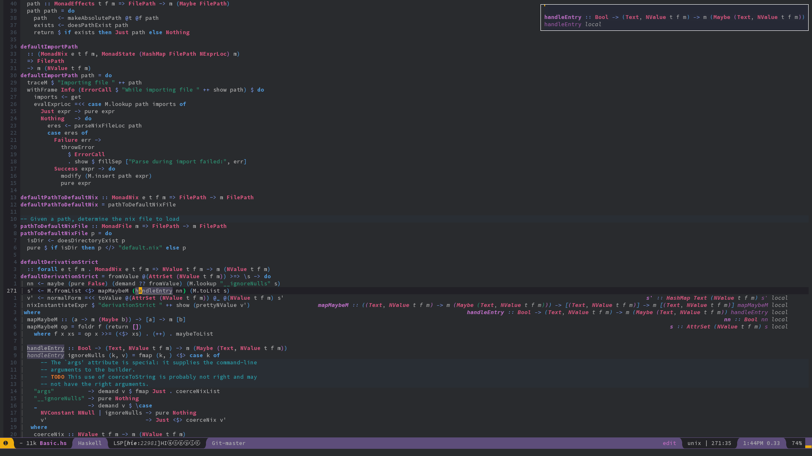

Fundamental Haskell notes
Encyclopedcal handbook for learning and undersatanding fundamentals
Table of Contents
- 1. Introduction
- 2. Definitions
- 2.1. Algebra
- 2.2. Category theory
- 2.2.1. *
- 2.2.2. Abelian category
- 2.2.3. Composition
- 2.2.4. Endofunctor category
- 2.2.5. Functor
- 2.2.5.1. *
- 2.2.5.2. Power set functor
- 2.2.5.3. Forgetful functor
- 2.2.5.4. Identity functor
- 2.2.5.5. Endofunctor
- 2.2.5.6. Applicative functor
- 2.2.5.6.1. *
- 2.2.5.6.2. Applicative property
- 2.2.5.6.3. *
- 2.2.5.6.4. Applicative function
- 2.2.5.6.5. Special applicatives
- 2.2.5.6.6. Monad
- 2.2.5.6.6.1. *
- 2.2.5.6.6.2. Monad property
- 2.2.5.6.6.3. Monad type class
- 2.2.5.6.6.4. Functor -> Applicative -> Monad progression
- 2.2.5.6.6.5. Monad function
- 2.2.5.6.6.6. Comonad
- 2.2.5.6.6.7. Kleisli arrow
- 2.2.5.6.6.8. Kleisli composition
- 2.2.5.6.6.9. Kleisli category
- 2.2.5.6.6.10. Special monad
- 2.2.5.6.6.11. Monad transformer
- 2.2.5.6.7. Alternative type class
- 2.2.5.7. Monoidal functor
- 2.2.5.8.
$> - 2.2.5.9. Multifunctor
- 2.2.6. Hask category
- 2.2.7. Magma
- 2.2.8. Morphism
- 2.2.9. Set category
- 2.2.10. Natural transformation
- 2.2.11. Category dual
- 2.2.12. Thin category
- 2.2.13. Commuting diagram
- 2.2.14. Universal construction
- 2.2.15. Product
- 2.2.16. Coproduct
- 2.2.17. Free object
- 2.2.18. Internal category
- 2.2.19. Hom set
- 2.3. Data type
- 2.3.1. *
- 2.3.2. Actual type
- 2.3.3. Algebraic data type
- 2.3.4. Cardinality
- 2.3.5. Data constant
- 2.3.6. Data constructor
- 2.3.7. data declaration
- 2.3.8. Dependent type
- 2.3.9. Gen type
- 2.3.10. Higher-kinded data type
- 2.3.11. newtype declaration
- 2.3.12. Principal type
- 2.3.13. Product data type
- 2.3.14. Proxy type
- 2.3.15. Static typing
- 2.3.16. Structural type
- 2.3.17. Structural type system
- 2.3.18. Sum data type
- 2.3.19. Type alias
- 2.3.20. Type class
- 2.3.21. Type constant
- 2.3.22. Type constructor
- 2.3.23. type declaration
- 2.3.24. Typed hole
- 2.3.25. Type inference
- 2.3.26. Type class instance
- 2.3.27. Type rank
- 2.3.28. Type variable
- 2.3.29. Unlifted type
- 2.3.30. Linear type
- 2.3.31. NonEmpty list data type
- 2.3.32. Session type
- 2.3.33. Binary tree
- 2.3.34. Bottom value
- 2.3.35. Bound
- 2.3.36. Constructor
- 2.3.37. Context
- 2.3.38. Inhabit
- 2.3.39. Maybe
- 2.3.40. Expected type
- 2.3.41. ADT
- 2.3.42. Concrete type
- 2.3.43. Type punning
- 2.3.44. Kind
- 2.3.45. IO
- 2.4. Expression
- 2.5. Function
- 2.5.1. *
- 2.5.2. Arity
- 2.5.3. Bijection
- 2.5.4. Combinator
- 2.5.5. Function application
- 2.5.6. Function body
- 2.5.7. Function composition
- 2.5.8. Function head
- 2.5.9. Function range
- 2.5.10. Higher-order function
- 2.5.11. Injection
- 2.5.12. Partial function
- 2.5.13. Purity
- 2.5.14. Pure function
- 2.5.15. Sectioning
- 2.5.16. Surjection
- 2.5.17. Unsafe function
- 2.5.18. Variadic
- 2.5.19. Domain
- 2.5.20. Codomain
- 2.5.21. Open formula
- 2.5.22. Recursion
- 2.5.23. Free variable
- 2.5.24. Closure
- 2.5.25. Parameter
- 2.5.26. Partial application
- 2.5.27. Well-formed formula
- 2.6. Homotopy
- 2.7. Lambda calculus
- 2.8. Operation
- 2.9. Permutation
- 2.10. Point-free
- 2.11. Polymorphism
- 2.12. Compositionality
- 2.13. Referential transparency
- 2.14. Semantics
- 2.14.1. Operational semantics
- 2.14.2. Denotational semantics
- 2.14.2.1. Abstraction
- 2.14.2.2. Ambigram
- 2.14.2.3. Binary
- 2.14.2.4. Arbitrary
- 2.14.2.5. Refutable
- 2.14.2.6. Irrefutable
- 2.14.2.7. Superclass
- 2.14.2.8. Unit
- 2.14.2.9. Nullary
- 2.14.2.10. Syntax tree
- 2.14.2.11. Stream
- 2.14.2.12. Linear
- 2.14.2.13. Predicative
- 2.14.2.14. Quantifier
- 2.14.2.15. Idiom
- 2.14.2.16. Impredicative
- 2.14.3. Axiomatic semantics
- 2.14.4. Content word
- 2.14.5. Ancient Greek and Latin prefixes
- 2.15. Set
- 2.16. Testing
- 2.17. Logic
- 2.18. Haskell structure
- 2.18.1. *
- 2.18.2. Pattern match
- 2.18.3. Smart constructor
- 2.18.4. Level of code
- 2.18.5. Orphan instance
- 2.18.6. undefined
- 2.18.7. Hierarchical module name
- 2.18.8. Reserved word
- 2.18.9. Haskell Language Report
- 2.18.10. Haskell'
- 2.18.11. Lense
- 2.18.12. Pragma
- 2.18.12.1. LANGUAGE pragma
- 2.18.12.1.1. LANGUAGE option
- 2.18.12.1.1.1. *
- 2.18.12.1.1.2. Useful by default
- 2.18.12.1.1.3. AllowAmbiguousTypes
- 2.18.12.1.1.4. ApplicativeDo
- 2.18.12.1.1.5. ConstrainedClassMethods
- 2.18.12.1.1.6. CPP
- 2.18.12.1.1.7. DeriveFunctor
- 2.18.12.1.1.8. ExplicitForAll
- 2.18.12.1.1.9. FlexibleContexts
- 2.18.12.1.1.10. FlexibleInstances
- 2.18.12.1.1.11. GeneralizedNewtypeDeriving
- 2.18.12.1.1.12. ImplicitParams
- 2.18.12.1.1.13. LambdaCase
- 2.18.12.1.1.14. MultiParamTypeClasses
- 2.18.12.1.1.15. MultiWayIf
- 2.18.12.1.1.16. OverloadedStrings
- 2.18.12.1.1.17. PartialTypeSignatures
- 2.18.12.1.1.18. RankNTypes
- 2.18.12.1.1.19. ScopedTypeVariables
- 2.18.12.1.1.20. TupleSections
- 2.18.12.1.1.21. TypeApplications
- 2.18.12.1.1.22. TypeSynonymInstances
- 2.18.12.1.1.23. UndecidableInstances
- 2.18.12.1.1.24. ViewPatterns
- 2.18.12.1.1.25. DatatypeContexts
- 2.18.12.1.1.26. StandaloneKindSignatures
- 2.18.12.1.1.27. PartialTypeSignatures
- 2.18.12.1.2. How to make a GHC LANGUAGE extension
- 2.18.12.1.1. LANGUAGE option
- 2.18.12.1. LANGUAGE pragma
- 2.19. Computer science
- 2.20. Graph theory
- 2.21. Tagless-final
- 2.22. Prefix notation
- 3. Give definitions
- 3.1. Identity type
- 3.2. Constant type
- 3.3. Gen
- 3.4. Tensorial strength
- 3.5. Strong monad
- 3.6. Weak head normal form
- 3.7. Function image
- 3.8. Invertible
- 3.9. Invertibility
- 3.10. Define LANGUAGE pragma options
- 3.11. GHC check keys
- 3.12. Generalised algebraic data types
- 3.13. Order theory
- 3.14. Universal algebra
- 3.15. Relation
- 3.16. Cryptomorphism
- 3.17. Lexically scoped type variables
- 3.18. Abstract data type
- 3.19. Functional dependencies
- 3.20. MonoLocalBinds
- 3.21. KindSignatures
- 3.22. ExplicitNamespaces
- 3.23. Combinator pattern
- 3.24. Symbolic expression
- 3.25. Polynomial
- 3.26. Data family
- 3.27. Type synonym family
- 3.28. Indexed type family
- 3.29. TypeFamilies
- 3.30. Error
- 3.31. Exception
- 3.32. ConstraintKinds
- 3.33. Specialisation
- 3.34. Diagram
- 3.35. Cathegory theoretical presheaf
- 3.36. Topological presheaf
- 3.37. Diagonal functor
- 3.38. Limit functor
- 3.39. Dual vector space
- 3.40. Fundamental group
- 3.41. Algebra of continuous function
- 3.42. Tangent and cotangent bundle
- 3.43. Group action / representation
- 3.44. Lie algebra
- 3.45. Tensor product
- 3.46. Forgetful functor
- 3.47. Free functor
- 3.48. Homomorphism group
- 3.49. Representable functor
- 3.50. Corecursion
- 3.51. Coinduction
- 3.52. Initial algebra of an endofunctor
- 3.53. Terminal coalgebra for an endofunctor
- 3.54. Continuation
- 3.55. Control.Concurrent.Async
- 3.56. Semilattice
- 4. Citation
- 5. Good code
- 5.1. Good: Type aliasing
- 5.2. Good: Type wideness
- 5.3. Good: Print
- 5.4. Good: Fold
- 5.5. Good: Computation model
- 5.6. Good: Make bottoms only local
- 5.7. Good: Newtype wrap is ideally transparent for compiler and does not change performance
- 5.8. Good: Instances of types/type classes must go with code you write
- 5.9. Good: Functions can be abstracted as arguments
- 5.10. Good: Infix operators can be bind to arguments
- 5.11. Good: Arbitrary
- 5.12. Good: Principle of Separation of concerns
- 5.13. Good: Function composition
- 5.14. Good: Point-free
- 5.15. Good: Functor application
- 5.16. Good: Parameter order
- 5.17. Good: Applicative monoid
- 5.18. Good: Creative process
- 5.19. Good: About operators
(<$ )( **>)(<* )(>> ) - 5.20. Good: About functions like {mapM, sequence}_
- 5.21. Good: Guideliles
- 5.22. Good: Use Typed holes to progress the code
- 5.23. Good: Haskell allows infinite terms but not infinite types
- 5.24. Good: Use type sysnonims to differ the information
- 5.25. Good: Use
Control.Monad.Exceptinstead ofControl.Monad.Error - 5.26. Good: Monad OR Applicative
- 5.27. Good: Haskell Package Versioning Policy
- 5.28. Good: Linear type
- 5.29. Good: Exception vs Error
- 5.30. Good: Let vs. Where
- 5.31. Good: RankNTypes
- 5.32. Good: Handling orphan instance
- 5.33. Good: Smart constructor
- 5.34. Good: Thin category
- 5.35. Good: Recursion
- 5.36. Good: Monoid
- 5.37. Good: Free monad
- 5.38. Good: Use mostly where clauses
- 5.39. Good: Where clause is in a scope with function parameters
- 5.40. Good: Strong preference towards pattern matching over {head, tail, etc.} functions
- 5.41. Good: Patternmatching is possible on monadic bind in do
- 5.42. Good: Applicative vs Monad
- 5.43. Good: StateT, ReaderT, WriterT
- 5.44. Good: Working with MonadTrans and lift
- 5.45. Good: Don't mix Where and Let
- 5.46. Good: Where vs. Let
- 5.47. Good: The proper nature algorithm that models behaviour of many objects is computation heavy
- 5.48. Good: In Haskell parameters bound by lambda declaration instantiate to only one concrete type
- 5.49. Good: Instance is a good structure to drew a type line
- 5.50. Good: MTL vs. Transformers
- 6. Bad code
- 7. Useful functions to remember
- 8. Tool
- 8.1. ghc-pkg
- 8.2. Integration of NixOS/Nix with Haskell IDE Engine (HIE) and Emacs (Spacemacs)
- 8.3. GHC
- 8.4. GHCI
- 8.5. GHCID
- 8.6. runghc
- 8.7. Packaging
- 8.8. Continuous integration platrorms (CIs) for Open Source Haskell projets
- 9. Library
- 9.1. Exceptions
- 9.1.1. Exceptions - optionally pure extensible exceptions that are compatible with the mtl
- 9.1.2. Safe-exceptions - safe, simple API equivalent to the underlying implementation in terms of power, encourages best practices minimizing the chances of getting the exception handling wrong.
- 9.1.3. Enclosed-exceptions - capture exceptions from the enclosed computation, while reacting to asynchronous exceptions aimed at the calling thread.
- 9.2. Memory management
- 9.3. Parsers - megaparsec
- 9.4. CLIs - optparse-applicative
- 9.5. HTML - Lucid
- 9.6. Web applications - Servant
- 9.7. IO libraries
- 9.8. JSON - aeson
- 9.9. Backpack
- 9.10. DSL
- 9.1. Exceptions
- 10. Draft
- 10.1. Exception handling
- 10.1.1. Ideal catching
- 10.1.2.
Control.Exception.Safemain sets of functions - 10.1.3. Clean-up of actions/resources
- 10.1.4. Ideal model
- 10.1.5. Universal exception type
- 10.1.6. Individual exception types
- 10.1.7. Abstract exception type
- 10.1.8. Composit approach
- 10.1.9. The changes in GHC 8.8
- 10.1.10. Diversity in exceptions
- 10.1.11. Exception handling strategies
- 10.1.12. Asynchronous exception
- 10.1.13. Monadic Error handling
- 10.2. Constraints
- 10.3. Monad transformers and their type classes
- 10.4. Layering monad transformers
- 10.5. Hoogle
- 10.6. ST-Trick monad
- 10.7. Either
- 10.8. Inverse
- 10.9. Inversion
- 10.10. Inverse function
- 10.11. Inverse morphism
- 10.12. Partial inverse
- 10.13. PatternSynonyms
- 10.14. GHC debug keys
- 10.15. GHC optimize keys
- 10.16. Computational trinitarianism
- 10.17. Techniques functional programming deals with the state
- 10.18. Functions
- 10.19. Void
- 10.20. Intuitionistic logic
- 10.21. Principle of explosion
- 10.22. Universal property
- 10.23. Yoneda lemma
- 10.24. Monoidal category, functoriality of ADTs, Profunctors
- 10.25. Const functor
- 10.26. Arrow in Haskell
- 10.27. Contravariant functor
- 10.28. Profunctor
- 10.29. Coerce
- 10.30. Universal/Existential quantification
- 10.31. Propagator
- 10.32. Code technics
- 10.1. Exception handling
- 11. Reference
- 12. Giving back
_oo0oo_
o88888o
88" . "88
(| -_- |)
0\ = /0
___/`---'\____
.' \| |// '.
/ /||| : |||/\ \
| _|\||| -:- ||||| \
/ | \\ - /// |\ \
| \_| ''\---/'' |/ |
\ .-\__ '-' ___/-. /
___'. .' /--.--\ `. .'___
."" '< `.___\_<|>_/___.' >' "".
| | : `- \`.;`\ _ /`;.`/ - ` : | |
\ \ `_. \_ __\ /__ _/ .-` / /
=====`-.____`.___ \_____/___.-`___.-'=====
`=---='
1 Introduction
“Employ your time in improving yourself by other men's writings so that you shall come easily by what others have labored hard for.” (Socrates by Plato)
Important notes on Haskell, category theory & related fields, terms and recommendations.
Book comes in forms:
This book is created using complex Org markup file with a lot of LaTeX and LaTeX formulas. Be aware - GitHub & GitLab only partially parse Org into HTML.
To get the full view:
- Outline navigation
LaTeX formulas:
\( {\displaystyle\left[{-\frac{\hbar^{2}}{2m}}\nabla^{2}+V(\vec{r},t)\right]\Psi({\vec{r}},t)=i\hbar{\partial\over\partial{t}}\Psi({\vec{r}},t),\quad\sum_{k,j}\left[-{\frac{\hbar^{2}}{\sqrt{a}}}{\frac{\partial}{\partial{q^{k}}}}\left({\sqrt{a}}a^{kj}{\frac{\partial}{\partial{q^{j}}}}\right)+V\right]\Psi+{\frac{\hbar}{i}}{\frac{\partial{\Psi}}{\partial{t}}}=0} \)
- Interlinks: Interlinks
, please refere to Web book, PDF, LaTeX, of use Org-mode capable viewer/editor.
Note about the markup: <<<This is a radio target>>> - is the ancor for dynamic linking.
Users of Emacs can prettify radio targets to be shown as hyper-links with this Elisp snippet:
;;;; 2019-06-12: NOTE: ;;;; Prettify '<<<Radio targets>>>' to be shown as '_Radio_targets_', ;;;; when `org-descriptive-links` set. ;;;; This is improvement of the code from: Tobias&glmorous: ;;;; https://emacs.stackexchange.com/questions/19230/how-to-hide-targets ;;;; There exists library created from the sample: ;;;; https://github.com/talwrii/org-hide-targets (defcustom org-hidden-links-additional-re "\\(<<<\\)[[:print:]]+?\\(>>>\\)" "Regular expression that matches strings where the invisible-property of thesub-matches 1 and 2 is set to org-link." :type '(choice (const :tag "Off" nil) regexp) :group 'org-link) (make-variable-buffer-local 'org-hidden-links-additional-re) (defun org-activate-hidden-links-additional (limit) "Put invisible-property org-link on strings matching `org-hide-links-additional-re'." (if org-hidden-links-additional-re (re-search-forward org-hidden-links-additional-re limit t) (goto-char limit) nil)) (defun org-hidden-links-hook-function () "Add rule for `org-activate-hidden-links-additional' to `org-font-lock-extra-keywords'. You can include this function in `org-font-lock-set-keywords-hook'." (add-to-list 'org-font-lock-extra-keywords '(org-activate-hidden-links-additional (1 '(face org-target invisible org-link)) (2 '(face org-target invisible org-link))))) (add-hook 'org-font-lock-set-keywords-hook #'org-hidden-links-hook-function)
SCHT: and metadata in :properties: - of my org-drill practices, please just run org-drill-strip-all-data.
2 Definitions
2.1 Algebra
\arabicfont{الجبر} al-jabr assemble parts
A system of parts based on given axioms (properties) and operations on them.
\additional
Additional meanings:
2.1.1 *
2.1.2 Algebraic
Composite from simple parts.
Also: Algebraic data type.
2.1.3 Algebraic structure
* includes axioms that must be satisfied and operations on the underlying (or "carrier") set.
An underlying set with * on top of it also called "an algebra".
* include groups, rings, fields, and lattices. More complex structures can be defined by introducing multiple operations, different underlying sets, or by altering the defining axioms. Examples of more complex * can be many modules, algebras and other vector spaces, and any variations that the definition includes.
| Closure | Associativity | Identity | Invertability | Commutativity | Distributive | |
|---|---|---|---|---|---|---|
| Semigroupoid | ✓ | |||||
| Small Category | ✓ | ✓ | ||||
| Groupoid | ✓ | ✓ | ✓ | |||
| Magma | ✓ | |||||
| Quasigroup | ✓ | ✓ | ||||
| Loop | ✓ | ✓ | ✓ | |||
| Semigroup | ✓ | ✓ | ||||
| Inverse Semigroup | ✓ | ✓ | ✓ | |||
| Monoid | ✓ | ✓ | ✓ | |||
| Group | ✓ | ✓ | ✓ | ✓ | ||
| Abelian group | ✓ | ✓ | ✓ | ✓ | ✓ | |
| Non-unital ring (rng) | ✓ + × | ✓ + × | ✓ + | ✓ + | ✓ + | ✓ |
| Semiring (rig) | ✓ + × | ✓ + × | ✓ + × | ✓ × | ✓ + | ✓ |
| Ring | ✓ + × | ✓ + × | ✓ + × | ✓ + × | ✓ + | ✓ |
2.1.3.1 *
2.1.3.2 Fundamental theorem of algebra
Any non-constant single-variable polynomial with complex coefficients has at least one complex root.
From this definition follows property that the field of complex numbers is algebraically closed.
2.1.4 Modular arithmetic
System for integers where numbers wrap around the certain values (single - modulus, plural - moduli).
Example - 12-hour clock.
2.1.4.1 *
2.1.4.2 Modulus
Special numbers where arithmetic wraps around in modular arithmetic.
2.1.4.2.1 *
Moduli - plural.
2.2 Category theory
Category \( \mathcal{C} \) consists of the basis:
Primitives:
- Objects - \( a^{\mathcal{C}} \). A node. Object of some type. Often sets, than it is Set category.
- Arrows - \( {(a,b)}^{\mathcal{C}} \) (AKA morphisms mappings).
- Arrow (morphism) composition - binary operation: \( {(a, b)}^{\mathcal{C}} \circ {(b, c)}^{\mathcal{C}} \equiv {(a, c)}^{\mathcal{C}} \ | \ \forall a, b, c \in \mathcal{C} \) AKA principle of compositionality for arrows.
Properties (or axioms):
- Associativity of morphisms: \( {h} \circ ({g} \circ {f}) \equiv ({h} \circ {g}) \circ {f} \ \ | \ \ {f}_{a \to b}, {g}_{b \to c}, {h}_{c \to d} \)
- Every object has (two-sided) identity morphism (& in fact - exactly one): \( {1}_x \circ {f}_{a \to x} \equiv {f}_{a \to x}, \ \ {g}_{x \to b} \circ {1_x} \equiv {g}_{x \to b } \ \ | \ \ \forall x \ \exists {1}_{x}, \forall {f}_{a \to x}, \forall {g}_{x \to b} \)
- Principle of compositionality.
From these axioms, can be proven that there is exactly one identity morphism for every object.
Object and morphism are complete abstractions for anything. In majority of cases under object is a state and morphism is a change.
2.2.1 *
2.2.2 Abelian category
Generalised category for homological algebra (having a possibility of basic constructions and techniques for it).
Category which:
- has a zero object,
- has all binary biproducts,
- has all kernel's and cokernels,
- (it has all pullbacks and pushouts)
- all monomorphism's and epimorphism's are normal.
Abelian category is a stable structure; for example it is regular and satisfy the snake lemma. The class of Abelian categories is closed under several categorical constructions.
There is notion of Abelian monoid (AKS Commutative monoid) and Abelian group (Commutative group).
Basic examples of *:
* are widely used in algebra, algebraic geometry, and topology.
* has many constructions like in categories of modules:
- kernels
- exact sequences
- commutative diagrams
* has disadvantage over category of modules. Objects do not necessarily have elements that can be manipulated directly, so traditional definitions do not work. Methods must be supplied that allow definition and manipulation of objects without the use of elements.
2.2.2.1 *
2.2.4 Endofunctor category
From the name, in this Category:
- objects of \( End \) are Endofunctors \( E^{\mathcal{C \to C}} \)
- morphisms are natural transformations between endofunctors
2.2.5 Functor
* full translation (map) of one category into another. Translating objects and morphisms (as input can take morphism or object).
* - forgetful - discards part of the structure. * - faithful - fully preserves all morphisms - injective on Hom-sets. * - full - translation of morphisms fully covers all the morphisms between according objecs in the target categoty.
For Functor type class or fmap - see Power set functor.
Functor properties (axioms):
- \( F^{\mathcal{C \to D}}(a) \quad | \quad \forall a^{\mathcal{C}} \) - every source object is mapped to object in target category
- \( \overrightarrow{(F^{\mathcal{C \to D}}(a),F^{\mathcal{C \to D}}(b))}^{\mathcal{D}} \ \ | \ \ \forall \overrightarrow{(a, b)}^{\mathcal{C}} \) - every source morphism is mapped to target category morphism between corresponding objects
- \( F^{\mathcal{C \to D}}(\overrightarrow{g}^{\mathcal{C}} \circ \overrightarrow{f}^{\mathcal{C}}) = F^{\mathcal{C \to D}}(\overrightarrow{g}^{\mathcal{C}}) \circ F^{\mathcal{C \to D}}(\overrightarrow{f}^{\mathcal{C}}) \quad | \quad \forall y=\overrightarrow{f}^{\mathcal{C}}(x), \forall \overrightarrow{g}^{\mathcal{C}}(y) \) - composition of morphisms translates directly (tautologically goes from other two)
These axioms guarantee that composition of functors can be fused into one functor with composition of morphisms. This process called fusion.
In Haskell this axioms have form:
fmap id = id fmap (f . g) = fmap f . fmap g
Since * is 1-1 mapping of initial objects - it is a memoizable dictionary with cardinality of initial objects. Also in Hask category functors are obviously endofunctors ∴ they are special kinds of containers for the parametric values (AKA product type). In Haskell product type * are endofunctors from polymorphic type into a functor wrapper of a polymorphic type.
* translates in one direction, and does not provide algorythm of reversing itself or retriving the parametric value.
2.2.5.1 *
Functors Functorial - something that has functor properties, and so also is a functor.
2.2.5.2 Power set functor
\( \mathcal{P^{S \to P(S)}} \)
* - functor from set \( S \) to its power set \( \mathcal{P}(S) \).
Functor type class in Haskell defines a * and allows to do function application inside type structure layers (denoted \( f \) or \( m \)). IO is also such structure. Power set is unique to the set, * is unique to the category (data type). * embodies in itself any endofunctor. It is easily seen from Haskell definition - that the * is the polymorphic generalization over any endofunctor in a category. Application of a function to * gives a particular endofunctor (see Hask category).
class Functor f where fmap :: (a -> b) -> f a -> f b
Functor instance must be of kind ( * -> * ), so instance for higher-kinded data type must be applied until this kind.
Composed * can lift functions through any layers of structures that belong to Functor type class.
* can be used to filter-out error cases (Nothing & Left cases) in Maybe, Either and related types.
2.2.5.2.1 *
2.2.5.2.2 Power set functor properties
Type instance of functor should abide this properties:
Full transparency of composition translation. So order of composition and translation does not metter, the result is always the same.
fmap (f . g) == fmap f . fmap g
Including cases: a) translate everything one-by-one and assemble at destination category. b) assemble everything in source cetegory and translate in one go once.
Composing in source category and translating at once - is a much-much more effective computation (known as "functor fusion").
2.2.5.2.3 Lift
fmap :: (a -> b) -> (f a -> f b)
Functor takes function a -> b and returns a function f a -> f b this is called lifting a function.
Lift does a function application through the data structure.
2.2.5.2.4 Power set functor is a free monad
Since:
- \( \forall e \in S : \ \exists \{e\} \, \in \, {\mathcal{P}(S)} \ \vDash \ \ \forall e \in S : \ \exists (e \to \{e\}) \equiv unit \)
- \( \forall \mathcal{P}(S) : \ \mathcal{P}(S) \in \mathcal{P}(S) \ \vDash \ \ \forall \mathcal{P}(S) : \ \exists (\mathcal{P}(\mathcal{P}(S)) \to \mathcal{P}(S)) \equiv join \)
2.2.5.3 Forgetful functor
Functor that forgets part or all of what defines structure in domain category. \( F^{\mathbf {Grp} \to \mathbf {Set}} \) that translates groups into their underlying sets. Constant functor is another example.
2.2.5.3.1 *
2.2.5.4 Identity functor
2.2.5.5 Endofunctor
Is a functor which source (domain) and target (codomain) are the same category.
\( F^{\mathcal{C \to C}}, E^{\mathcal{C \to C}} \)
2.2.5.5.1 *
2.2.5.6 Applicative functor
* - Computer science term. Category theory name - lax monoidal functor. And in category \( Set \), and so in category \( Hask \) all applicatives and monads are strong (have tensorial strength).
* - sequences functorial computations (plain functors can't).
(<*>) :: f (a -> b) -> f a -> f b
Requires Functor to exist. Requires Monoidal structure.
Has monoidal structure rules, separated form function application inside structure.
Data type can have several applicative implementations.
Standard definition:
class Functor f => Applicative f where (<*>) :: f (a -> b) -> f a -> f b pure :: a -> f a
pure - if a functor, identity Kleisli arrow, natural transformation.
Composition of * always produces *, contrary to monad (monads are not closed under composition).
Control.Monad has an old function ap that is old implementation of <*>:
ap :: Monad m => m (a -> b) -> m a -> m b
2.2.5.6.1 *
2.2.5.6.2 Applicative property
2.2.5.6.3 *
pure id <*> v = v
Function composition works regularly.
pure (.) <*> u <*> v <*> w = u <*> (v <*> w)
Internal function application doesn't change the structure around values.
pure f <*> pure x = pure (f x)
On condition that internal order of evaluation is preserved - order of operands is not relevant.
u <*> pure y = pure ($ y) <*> u
2.2.5.6.4 Applicative function
Essentially a fmap.
:type liftA liftA :: Applicative f => (a -> b) -> f a -> f b
Lifts function into applicative function.
Lifts binary function across two Applicative functors.
liftA2 :: Applicative f => (a -> b -> c) -> f a -> f b -> f c
liftA2 f x y == pure f <*> x <*> y
liftA2 (<*>) is pretty useful. It can lift binary operation through the two layers: It is two-layer Applicative.
liftA2 :: Applicative f => ( a -> b -> c ) -> f a -> f b -> f c <*> :: Applicative f => (f (a -> b) -> f a -> f b) liftA2 (<*>) :: (Applicative f1, Applicative f2) => f1 (f2 (a -> b)) -> f1 (f2 a) -> f1 (f2 b)
when :: Applicative f => Bool -> f () -> f ()
Only when True - perform an applicative computation.
unless :: Applicative f => Bool -> f () -> f ()
Only when False - perform an applicative computation.
2.2.5.6.5 Special applicatives
-- Applicative f => -- f ~ Identity type Id = Identity instance Applicative Id where pure :: a -> Id a (<*>) :: Id (a -> b) -> Id a -> Id b mkId = Identity xs = [1, 2, 3] const <$> mkId xs <*> mkId xs' -- [1,2,3]
pure is Right.
Defaults to Left.
And if there is two Left's - to Left of the first argument.
The Validation data type isomorphic to Either, but has accumulative Applicative on the Left side.
Validation data type does not have a monad implemented.
For Either monad monad has simple implementation: Left case drops computation and returns Left value.
Monad needs to process the result of computation - for Validation - it requires to be able to process all Left error statement cases for Validation, it is or non-terminaring Monad or one which is impossible to implement in polymorphic way with Validation.
2.2.5.6.6 Monad
\textgreek{μόνος} monos sole
\textgreek{μονάδα} monáda unit
In loose terms, * - is an ability built over structures that allows to compose functions that produce that structures.
Since it is possible to express unpure functions with equivalent pure functions that produce a structure, * become widely used in Haskell for those cases also. * with lazy evaluation also allows controll over the continuation of calculations by early terminations.
* - lax monoid in endofunctor category, that relies on \( \eta \) (unit) and \( \mu \) (join) natural transformations to form an equivalent of identity.
Monad on \( \mathcal{C} \) is \( \{E^{\mathcal{C \to C}}, \, \eta, \, \mu\} \):
- \( E^{\mathcal{C \to C}} \) - is an endofunctor
- two natural transformations, \( 1^c \to E \) and \( E \circ E \to E \):
- \( \eta^{1^{\mathcal{C}} \to E} = {unit}^{Identity \to E}(x) = f^{ x \to E(x)}(x) \)
- \( \mu^{(E \circ E) \to E} = {join}^{(E \circ E) \to (Identity \circ E)}(x) = | y = E(x) | = f^{E (y) \to y}(y) \)
- \( \mathcal{C} \) is a category
- \( 1^{\mathcal{C}} \) denotes the \( \mathcal{C} \) identity functor
- \( (E \circ E) \) - endofunctor \( \mathcal{C \to C} \)
Definition with \( \{E^{\mathcal{C \to C}}, \, \eta, \, \mu\} \) (in Hask: (\( \{e \, :: \, f \, a \, \to \, f \, b, \ pure, \ join\} \))) - is classic categorical, in Haskell minimal complete definition is \( \{fmap, \, pure, \, (>>=)\} \).
While \( T \) is mode classical Category theory notation, we used the \( E \equiv T \) substitution for purposes of notation being more understandable.
If there is a structure \( S \), and a way of taking object \( x \) into \( S \) and a way of collapsing \( S \circ S \) - there probably a monad.
\begin{tikzcd} & & {} \arrow[d, "\eta", Rightarrow] & & \\ C \arrow[rrrr, "Id", bend left=49] \arrow[rrrr, "E"] \arrow[rrrr, "E^{2}", bend right=49] & & {} & & C \\ & & {} \arrow[u, "\mu", Rightarrow] \end{tikzcd}Mostly monads used for sequencing actions (computations) (that looks like imperative programming), with ability to dependend on previous chains. Note if monad is commutative - it does not order actions.
Monad can shorten/terminate sequence of computations. It is implemented inside Monad instance. For example Maybe monad on Nothing drops chain of computation and returns Nothing.
* inherits the Applicative instance methods:
import Control.Monad (ap) return == pure ap == (<*>) -- + Monad requirement
| Math | Meaning | Cat/Fctr | \( X \in C \) | Type | Haskell |
|---|---|---|---|---|---|
| \( Id \) | endofunctor "Id" | \( C \to C \) | \( X \to Id (X) \) | \( a \to a \) | id |
| \( E \) | endofunctor "monad" | \( C \to C \) | \( X \to E (X) \) | \( m \ a \to m \ b \) | fmap |
| \( \eta \) | natural transformation "unit" | \( Id \to E \) | \( Id (X) \to E (X) \) | \( a \to m \ a \) | pure |
| \( \mu \) | natural transformation "multiplication" | \( E \circ E \to E \) | \( E (E(X)) \to E (X) \) | \( m \ (m \ a) \to m \ a \) | join |
Internals of Monad are Haskell data types, and as such - they can be consumed any number of times.
Composition of monadic types does not always results in monadic type.
Monad corresponds to functor properties & applicative properties and additionally:
pure x >>= f == f x
Explanation:
>>= :: Monad f => f a -> (a -> f b) -> f b pure x >>= f == f x
Rule that >>= must get first argument structure internals and apply to the function that is the second argument.
\begin{tikzcd} & & {} \arrow[dd, "\eta", Rightarrow] & & & & {} \arrow[dd, "I", Rightarrow] & & \\ C \arrow[rrrr, "Id", bend left=49] \arrow[rrrr, "T", bend right=49] \arrow[rrrrrrrr, "T", bend right=75] & & & & C \arrow[rrrr, "T", bend left=49] \arrow[rrrr, "T", bend right=49] & & & & C \\ & & {} & & {} \arrow[dd, "\mu", Rightarrow] & & {} & & \\ & & & & & & & & \\ & & & & {} \end{tikzcd}Diagram on endomorphism level:
\begin{tikzcd} Id \circ T \arrow[rr, "\eta \circ I"] \arrow[rrdd, no head, Rightarrow] & & T^{2} \arrow[dd, "\mu"] \\ & & \\ & & T \end{tikzcd}f >>= pure == f
Explanation:
>>= :: Monad f => f a -> (a -> f b) -> f b f >>= pure == f
AKA it is a tacit description of a monad bind as endofunctor.
\begin{tikzcd} & & {} \arrow[dd, "I", Rightarrow] & & & & {} \arrow[dd, "\eta", Rightarrow] & & \\ C \arrow[rrrr, "T", bend left=49] \arrow[rrrr, "T", bend right=49] \arrow[rrrrrrrr, "T", bend right=75] & & & & C \arrow[rrrr, "Id", bend left=49] \arrow[rrrr, "T", bend right=49] & & & & C \\ & & {} & & {} \arrow[dd, "\mu", Rightarrow] & & {} & & \\ & & & & & & & & \\ & & & & {} \end{tikzcd}Diagram on endomorphism level:
\begin{tikzcd} T^{2} \arrow[dd, "\mu"] & & T \circ Id \arrow[ll, "I \circ \eta"] \arrow[lldd, no head, Rightarrow] \\ & & \\ T \end{tikzcd}join (join (m m) m) == join (m join (m m)) (m >>= f) >>= g == m >>= (\ x -> f x >>= g)
In diagram form:
Category level:
\begin{tikzcd} & & {} \arrow[dd, "I", Rightarrow] & & & & {} \arrow[dd, "\mu", Rightarrow] & & \\ C \arrow[rrrr, "T", bend left=49] \arrow[rrrr, "T", bend right=49] \arrow[rrrrrrrr, "T", bend right=75] & & & & C \arrow[rrrr, "T^{2}", bend left=49] \arrow[rrrr, "T", bend right=49] & & & & C \\ & & {} & & {} \arrow[dd, "\mu", Rightarrow] & & {} & & \\ & & & & & & & & \\ & & & & {} \end{tikzcd}is \( = \) to:
\begin{tikzcd} & & {} \arrow[dd, "\mu", Rightarrow] & & & & {} \arrow[dd, "I", Rightarrow] & & \\ C \arrow[rrrr, "T^{2}", bend left=49] \arrow[rrrr, "T", bend right=49] \arrow[rrrrrrrr, "T", bend right=75] & & & & C \arrow[rrrr, "T", bend left=49] \arrow[rrrr, "T", bend right=49] & & & & C \\ & & {} & & {} \arrow[dd, "\mu", Rightarrow] & & {} & & \\ & & & & & & & & \\ & & & & {} \end{tikzcd}So, \( \mu \circ (\mu \circ I) = \mu \circ (I \circ \mu) \)
Endomorphism level:
\begin{tikzcd} & & T^{3} \arrow[dd, "\mu \circ I", bend right=49] \arrow[dd, "I \circ \mu", bend left=49] & & \\ & & & & \\ & & T^{2} \arrow[dd, "\mu"] & & \\ & & & & \\ & & T \end{tikzcd}class Applicative m => Monad m where (>>=) :: m a -> (a -> m b) -> m b (>>) :: m a -> m b -> m b return :: a -> m a
Is a monoid over monad, with additional rules. The precise set of rules (properties) not agreed upon. Class instances obey monoid & left zero rules, some additionally obey left catch and others left distribution.
Overall there * currently reforms (MonadPlus reform proposal) in several smaller nad strictly defined type classes.
Subclass of an Alternative.
<$> :: Functor f => (a -> b) -> f a -> f b <*> :: Applicative f => f (a -> b) -> f a -> f b =<< :: Monad f => (a -> f b) -> f a -> f b
pure & join are Natural transformations for the fmap.
return == pure
Nonstrict.
join :: Monad m => m (m a) -> m a
Generales knowledge of concat.
Kleisli composition that flattens two layers of structure into one.
The way to express ordering in lambda calculus is to nest.
>>= :: Monad f => f a -> (a -> f b) -> f b join . fmap :: Monad f => (a -> f b) -> f a -> f b
Nonstrict.
The most ubiqutous way to >>= something is to use Lambda function:
getLine >>= \name -> putStrLn "age pls:"
Also a neet way is to bundle and handle Monad - is to bundle it with bind, and leave applied partially. And use that partial bundle as a function - every evaluation of the function would trigger evaluation of internal Monad structure. Thumbs up.
printOneOf :: Bool -> IO () printOneOf False = putStr "1" printOneOf True = putStr "2" quant :: (Bool -> IO b) -> IO b quant = (>>=) (randomRIO (False, True)) recursePrintOneOf :: Monad m => (t -> m a) -> t -> m b recursePrintOneOf f x = (f x) >> (recursePrintOneOf f x) main :: IO () main = recursePrintOneOf (quant) $ printOneOf
Monadic extend Monadic bind Monad bind Binder
(>>=) >>= (=<<) =<<
(>> ) \equiv ( *>):Discard any resulting value of the action and sequence next action. Applicative has a similar operator.
(>>) :: m a -> m b -> m b (*>) :: f a -> f b -> f b
sequence :: (Traversable t, Monad m) => t (m a) -> m (t a)
Sequence gets the traversable of monadic computations and swaps it into monad computation of taverse. In the result the collection of monadic computations turns into one long monadic computation on traverse of data.
If some step of this long computation fails - monad fails.
mapM :: (Traversable t, Monad m) => (a -> m b) -> t a -> m (t b)
mapM gets the AMB function, then takes traversable data. Then applies AMB function to traversable data, and returns converted monadic traversable data.
foldM :: (Foldable t, Monad m) => (b -> a -> m b) -> b -> t a -> m b foldl :: Foldable t => (b -> a -> b) -> b -> t a -> b
* is a monadic foldl.
b is initial comulative value, m b is a comulative bank.
Right folding achieved by reversing the input list.
filterM :: Applicative m => (a -> m Bool) -> [a] -> m [a] filter :: (a -> Bool) -> [a] -> [a]
Take Boolean monadic computation, filter the list by it.
zipWithM :: Applicative m => (a -> b -> m c) -> [a] -> [b] -> m [c] zipWith :: (a -> b -> c) -> [a] -> [b] -> [c]
Take monadic combine function and combine two lists with it.
msum :: (Foldable t, MonadPlus m) => t (m a) -> m a sum :: (Foldable t, Num a) => t a -> a
Category \( \mathcal{C} \) comonad is a monad of opposite category \( \mathcal{C}^{op} \).
Composition of Kleisli arrows.
(<=<) :: Monad m => (b -> m c) -> (a -> m b) -> a -> m c infixr 1 ;; compare (.) :: (b -> c ) -> (a -> b ) -> a -> c
Often used left-to-right version:
(>=>) :: Monad m => (a -> m b) -> (b -> m c) -> a -> m c ;; compare (>>=) :: Monad m => m a -> (a -> m b) -> m b
Which allows to replace monadic bind chain with Kleisli composition.
f1 arg >>= f2 >>= f3 == f1 >=> f2 >=> f3 $ arg == f3 <=< f2 <=< f1 $ arg
Category \( \mathcal{C} \), \( 〈E, \overrightarrow{\eta}, \overrightarrow{\mu}〉 \) monad over \( \mathcal{C} \).
Kleisli category \( \mathcal{C}_{T} \) of \( \mathcal{C} \):
\( \mathrm{Obj}(\mathcal{C}_{T}) \ = \ \mathrm{Obj}(\mathcal{C}) \) \( \mathrm{Hom}_{\mathcal{C}_{T}}(x,y) \ = \ \mathrm{Hom}_{\mathcal{C}}(x,E(y)) \)
Wraps data in the Identity constructor.
Useful: Creates monads from monad transformers.
Bind: Applies internal value to the bound function.
Code: (see: coerce)
newtype Identity a = Identity { runIdentity :: a } instance Functor Identity where fmap = coerce instance Applicative Identity where pure = Identity (<*>) = coerce instance Monad Identity where m >>= k = k (runIdentity m)
Example:
-- derive the State monad using the StateT monad transformer type State s a = StateT s Identity a
Something that may not be or not return a result. Any lookups into the real world, database querries.
Bind: Nothing input gives Nothing output, Just x input uses x as input to the bound function.
When some computation results in Nothing - drops the chain of computations and returns Nothing.
Zero: Nothing Plus: result in first occurence of Just else Nothing.
Code:
data Maybe a = Nothing | Just a instance Monad Maybe where return = Just fail = Nothing Nothing >>= _ = Nothing (Just x) >>= f = f x instance MonadPlus Maybe where mzero = Nothing Nothing `mplus` x = x x `mplus` _ = x
Example: Given 3 dictionaries:
- Full names to email addresses,
- Nicknames to email addresses,
- Email addresses to email preferences.
Create a function that finds a person's email preferences based on either a full name or a nickname.
data MailPref = HTML | Plain data MailSystem = ... getMailPrefs :: MailSystem -> String -> Maybe MailPref getMailPrefs sys name = do let nameDB = fullNameDB sys nickDB = nickNameDB sys prefDB = prefsDB sys addr <- (lookup name nameDB) `mplus` (lookup name nickDB) lookup addr prefDB
When computation results in Left - drops other computations & returns the recieved Left.
Someting that can fail, throw exceptions.
The failure process records the description of a failure. Bind function uses successful values as input to the bound function, and passes failure information on without executing the bound function.
Useful: Composing functions that can fail. Handle exceptions, crate error handling structure.
Zero: empty error. Plus: if first argument failed then execute second argument.
Computations which may return 0 or more possible results.
Bind: The bound function is applied to all possible values in the input list and the resulting lists are concatenated into list of all possible results.
Useful: Building computations from sequences of non-deterministic operations.
Zero: [] Plus: (++)
Creates a read-only shared environment for computations.
The pure function ignores the environment, while >>= passes the inherited environment to both subcomputations.
Today it is defined though ReaderT transformer:
type Reader r = ReaderT r Identity -- equivalent to ((->) e), (e ->)
Old definition was:
newtype Reader e a = Reader { runReader :: (e -> a) }
For (e ->):
- Functor is
(.)
fmap :: (b -> c) -> (a -> b) -> a -> c fmap = (.)
- Applicative:
pureisconst
pure :: a -> b -> a pure x _ = x
(<*>)is:
(<*>) :: (a -> b -> c) -> (a -> b) -> a -> c (<*>) f g = \a -> f a (g a)
(>>=) :: (a -> b) -> (b -> a -> c) -> a -> c (>>=) m k = Reader $ \r -> runReader (k (runReader m r)) r join :: (e -> e -> a) -> e -> a join f x = f x x
runReader :: Reader r a -- the Reader to run -> r -- an initial environment -> a -- extracted final value
Usage:
data Env = ... createEnv :: IO Env createEnv = ... f :: Reader Env a f = do a <- g pure a g :: Reader Env a g = do env <- ask -- "Open the environment namespace into env" a <- h env -- give env to h pure a h :: Env -> a ... -- use env and produce the result main :: IO () main = do env <- createEnv a = runReader g env ...
In Haskell under normal circumstances impure functions should not directy call impure functions.
h is an impure function, and createEnv is impure function, so they should have intermediary.
Computations which accumulate monoid data to a shared Haskell storage. So * is parametrized by monoidal type.
Accumulator is maintained separately from the returned values.
Shared value modified through Writer monad methods.
* frees creator and code from manually keeping the track of accumulation.
Bind: The bound function is applied to the input value, bound function allowed to <> to the accumulator.
type Writer r = WriterT r Identity
Example:
f :: Monoid b => a -> (a, b) f a = if _condition_ then runWriter $ g a else runWriter do a1 <- h a pure a1 g :: Monoid b => Writer b a g a = do tell _value1_ -- accumulator <> _value1_ pure a -- observe that accumulator stored inside monad -- and only a main value needs to be returned. h :: Monoid b => Writer b a h a = do tell _value2_ -- accumulator <> _value_ pure a
runWriter :: Writer w a -> (a, w) -- Unwrap a writer computation -- as a (result, accumulator) pair. -- The inverse of writer.
WriterT, Writer unnecessarily keeps the entire logs in the memory. Use fast-logger for logging.
Computations that pass-over a state.
The bound function is applied to the input value to produce a state transition function which is applied to the input state.
Pure functional language cannot update values in place because it violates referential transparency.
type State s = StateT s Identity
Binding copies and transforms the state parameter through the sequence of the bound functions so that the same state storage is never used twice. Overall this gives the illusion of in-place update to the programmer and in the code, while in fact the autogenerated transition functions handle the state changes.
Example type: State st a
State describes functions that consume a state and produce a tuple of result and an updated state.
Monad manages the state with the next process:
- f - processsor making function
- pA, pAB, pB - state processors
- sN - states
- vN - values
Bind with a processor making function from state procesor (pA) creates a new state processor (pAB). The wrapping and unwrapping by State/runState is implicit.
* is a practical solution to the current functional programming situation that generally monads do not have composition ability. In other words many monads can not be composed.
* is a special monad that extends other monad with extra funcitonality, it is a convinience mechanism, the functionality itself always can be developed in some other way. Sometimes transformers can make things way harder (especially profound for concurrency (Michael Snoyman - Monad Transformer State)) then other ways of implementation, especially when transformers hold some structure information (state-like information, in ExceptT, StateT)
Monad is not closed under compostion. Composition of monadic types does not always results in monadic type.
Basic case: during implementation of monadic composition, as a result type m T m a arises, which does not allow join transformation for the m monadic layers or to have a regular unit transformation.
Monads that are * are the monads that have own properties as also ability to compose with any other monadand extend it with own properties. * use their implementation to solve the compostion type layering and allow to attach desirable property to result.
* solve monad composition and type layering by using own structure and information about itself. It is often that process involves a catamorphism of a * type layer.
Transformers have a light wrapper around the data that tags the modification with this transformer.
In type signatures of transformers *T m - m is already an extended monad, so *T is just a wrapper to point that out.
Main monadic structure m is wrapped around the internal data (core is a). The structure that corresponds to the transformer creation properties (if it emitted by \( \eta \) of a transformer), goes into m . Open parameters go external to the m.
newtype ExceptT e m a = ExceptT { runExceptT :: m (Either e a) } newtype MaybeT m a = MaybeT { runMaybeT :: m (Maybe a) } newtype ReaderT r m a = ReaderT { runReaderT :: r -> m a }
This has an effect that on stacking monad transformers, m becomes monad stack, and every next transformer injects the transformer creation-specific properies \( \eta \) inside the stack, so out-most transformer has inner-most structure. Base monad is structurally the outermost.
* extends monads by injecting Either layer underneath monad, and processing that structure:
newtype EitherT e m a = EitherT { runEitherT :: m (Either e a) }
EitherT of either package gets replaced by ExceptT of transformers or mtl packages.
Definition:
newtype ReaderT r m a = ReaderT { runReaderT :: r -> m a }
* functions: input monad m a, out: m a wrapped it in a free-variable r (partially applied function).
That allows to use transformed m a, now it requires and can use the r passed environment.
To create a Reader monad:
type Reader r = ReaderT r Identity
Allows to lift monadic actions into a larger context in a neutral way.
pure takes a parametric type and embodies it into constructed structure (talking of monad transformers - structure of the stacked monads).
lift takes monad and extends it with a transformer.
In fact, for monad transformers - lift is a last stage of the pure, it follows from the lift property.
Method:
lift :: Monad m => m a -> t m a
Lift a computation from the argument monad to the constructed monad.
Neutral means:
lift . return = return lift (m >>= f) = lift m >>= (lift . f)
The general pattern with MonadTrans instances is that it is usually lifts the injection of the known structure of transformer over some Monad.
lift embeds one monadic action into monad transformer.
The difference between pure, lift and MaybeT contructor becomes clearer if you look at the types:
Example, for MaybeT IO a:
pure :: a -> MaybeT IO a lift :: IO a -> MaybeT IO a MaybeT :: IO (Maybe a) -> MaybeT IO a x = (undefined :: IO a) :t (pure x) (pure x) :: Applicative t => t (IO a) -- t recieves one argument of product type :t (pure x :: MaybeT IO a) -- Expected type: MaybeT IO a1 -- Actual type: MaybeT IO (IO a0) -- While the real type would be :t (pure x :: MaybeT IO (IO a)) (pure x :: MaybeT IO (IO a)) :: MaybeT IO (IO a) -- This goes into a conflict of what type&kind (* -> *) transformer constructor awaits, and `m (m a)` is a layering we not interested in. :t (lift x) (lift x) :: MonadTrans t => t IO a -- result is a proper expected product type -- To belabour :t (lift x :: MaybeT IO a) (lift x) :: MonadTrans t => t IO a -- result is a proper expected product type
lift is a natural transformation \( \eta \) from an Identity monad (functor) with other monad as content into transformer monad (functor), with the preservation of the conteined monad:
-- Abstract monads with content as parameters. Define '~>' as a family of morphisms that translate one functor into another (natural transformation) type f ~> g = forall x. f x -> g x -- follows lift :: m ~> t m
* - allows to lift IO action until reaching the IO monad layer at the top of the Monad stack (which is allways in the Haskell code that does IO).
class (Monad m) => MonadIO m where liftIO :: IO a -> m a
liftIO properties:
liftIO . pure = pure liftIO (m >>= f) = liftIO m >>= (liftIO . f)
Which is identical properties to MonadTrans lift.
Since lift is one step, and liftIO all steps - all steps defined in terms of one step and all other steps, so the most frequent implementation is self-recursive lift . liftIO:
liftIO ioa = lift $ liftIO ioa
2.2.5.6.7 Alternative type class
Monoid over applicative. Has left catch property.
Allows to run simultaneously several instances of a computation (or computations) and from them yeld one result by property from (<|>) :: Type -> Type -> Type.
Minimal complete definition:
empty :: f a -- The identity element of <|> (<|>) :: f a -> f a -> f a -- Associative binary operation
2.2.5.7 Monoidal functor
Functors between monoidal categories that preserves monoidal structure.
2.2.5.9 Multifunctor
Functor that takes as an argument the product of types.
Or if combine it with product - accepts multiple argumets, so from that constructs "source" product category (Cartesian product) of categories, and realizes a functor from product category to target category.
Concept works over N type arguments instead of one.
Generalizes the concept of functor between categories, canonical morphisms between multicategories.
Any product or sum in a Cartesian category is a *.
In Haskell there is only one category, Hask, so in Haskell * is still endofunctor \( (Hask \times Hask) \rightarrow Hask \Rightarrow | (Hask \times Hask) \equiv Hask | \Rightarrow Hask \rightarrow Hask \).
Code definition:
class Bifunctor f where bimap :: (a -> a') -> (b -> b') -> f a a' -> f a a' bimap f g = first f . second g first :: (a -> a') -> f a b -> f a' b first f = bimap f id second :: (b -> b') -> f a b -> f a b' second = bimap id
2.2.5.9.1 *
2.2.6 Hask category
Category of Haskell where objects are types and morphisms are functions.
It is a hypothetical category at the moment, since undefined and bottom values break the theory, is not Cartesian closed, it does not have sums, products, or initial object, () is not a terminal object, monad identities fail for almost all instances of the Monad class.
That is why Haskell developers think in subset of Haskell where types do not have bottom values. This only includes functions that terminate, and typically only finite values. The corresponding category has the expected initial and terminal objects, sums and products, and instances of Functor and Monad really are endofunctors and monads.
Hask contains subcategories, like Lst containing only list types.
Haskell and Category concepts:
2.2.6.1 *
2.2.7 Magma
2.2.7.1 Mag category
The category of magmas, denoted \( Mag \), has as objects - sets with a binary operation, and morphisms given by homomorphisms of operations (in the universal algebra sense).
2.2.7.1.1 *
2.2.7.2 Semigroup
Magma with associative property of operation.
Defined in Haskell as:
class Semigroup a where (<>) :: a -> a -> a
2.2.7.2.1 *
2.2.7.2.2 Monoid
Semigroup with identity element. Category with a one object.
Ideally fits as an accumulation class.
class Monoid m where mempty :: m mappend :: m -> m -> m mappend = (<>) mconcat :: [m] -> m mconcat = foldr mappend mempty
* can be simplified to category with a single object, remember that monoid operation is a composition of morphisms operation in category.
For example to represent the whole non-negative integers with the one object and morphism "\( 1 \)" is absolutely enough, composition operation is "\( + \)".
import Data.Monoid do show (mempty :: Num a => Sum a) -- "Sum {getSum = 0}" show $ Sum 1 -- "Sum {getSum = 1}" show $ (Sum 1) <> (Sum 1) <> (Sum 1) -- "Sum {getSum = 3}" -- ...
Also backwards - any single-object category is a monoid. Category has an identity requirement and associativity of composition requirement, which makes it a free monoid.
mempty <> x = x
x <> mempty = x
x <> mempty = x (y <> z) = (x <> y) <> z mconcat = foldr (mempty <>)
Everything associative can be mappend.
Operation that forms structure has commutativity property: \( x \circ y = y \circ x \)
Opens a big abilities in concurrent and distributed processing.
Commutative monoid that is a group.
Commutative group under + & monoid under ×, + × connected by distributive property.
- and × are generalized binary operations of addition and multiplication. × has no requirement for commutativity.
Example: set of same size square matricies of numbers with matrix operations form a ring.
2.2.8 Morphism
\textgreek{μορφή} morphe form
Arrow between two objects inside a category.
Morphism can be anything.
Morphism is a generalization (\( f(x*y) \equiv f(x) \diamond f(y) \)) of homomorphism (\( f(x*y) \equiv f(x) * f(y) \)).
Since general morphisms not so much often ment and discussed - under morphism people almost always really mean the meaning of homomorphism-like properties, hense they discuss the algebraic structures (types) and homomorphisms between them.
In most usage, on a level under the objects: * is most often means a map (relation) that translates from one mathematical structure (that source object represents) to another (that target object represents) (that is called (somewhat, somehow) "structure-preserving", but that phrase still means that translation can be lossy and irrevertable, so it is only bear reassemblence of preservation), and in the end the morphism can be anything and not hold to this conditions.
Morphism needs to correspond to function requirements to be it.
2.2.8.2 Homomorphism
\textgreek{ὁμός} homos same (was chosen becouse of initial Anglish mistranslation to "similar")
\textgreek{μορφή} morphe form
similar form
* map between two algebraic structures of the same type that preserves the operations.
\( f(x*y) \equiv f(x) * f(y) \), where for \( f^{A \to B} \) - \( A, B \) are sets with additonal algebraic structures (algebras) that include operation ∗; \( x,\ y \) are elements of the set \( B \).
* sends identity morphisms to identity morphisms and inverses to inverses.
The concept of * has been generalized under the name of morphism to many structures that either do not have an underlying set, or are not algebraic, or do not preserve the operation.
2.2.8.2.1 *
2.2.8.3 Identity morphism
Identity morphism - or simply identity: \( x \in C : \; id_{x}=1_{x} : x \to x \) Composed with other morphism gives same morphism.
Corresponds to Reflexivity and Automorphism.
2.2.8.3.1 Identity
\( P(e,a)=P(a,e)=a \ | \ \exists e \in S, \forall a \in S \) \( P() \) is commutative.
\( \exists e \in S, \forall a \in S : \; P(e,a)=a \)
\( P(a,e)=a \; | \; \exists e \in S, \forall a \in S \)
2.2.8.3.2 Identity function
Return itself. (\ x.x)
id :: a -> a
2.2.8.4 Monomorphism
\textgreek{μονο} mono only
\textgreek{μορφή} morphe form
Maps one to one (uniquely), so invertable (always has inverse morphism), so preserves the information/structure. Domain can be equal or less to the codomain.
\( f^{X \to Y}, \ \forall x \in X \, \exists! y=f(x) \vDash f(x) \equiv f_{mono}(x) \) - from homomorphism context \( f_{mono} \circ g1 = f_{mono} \circ g2 \ \vDash \ g1 \equiv g2 \) - from general morphism context Thus * is left canselable.
If * is a function - it is injective. Initial set of f is fully uniquely mapped onto the image of f.
2.2.8.4.1 *
2.2.8.5 Epimorphism
\textgreek{επι} epi on, over
\textgreek{μορφή} morphe form
* is right canselable morphism. \( f^{X \to Y}, \forall y \in Y \, \exists f(x) \vDash f(x) \equiv f_{epi}(x) \) - from homomorphism context \( g_1 \circ f_{epi} = g_2 \circ f_{epi} \Rightarrow \; g_1 \equiv g_2 \) - from general morphism context
In Set category if * is a function - it is surjective (image of it fully uses codomain) Codomain is a called a projection of the domain.
* fully maps into the target.
2.2.8.5.1 *
2.2.8.6 Isomorphism
\textgreek{ἴσος} isos equal
\textgreek{μορφή} morphe form
Not equal, but equal for current intents and purposes.
Morphism that has inverse.
Almost equal, but not quite: (Integer, Bool) & (Bool, Integer) - but can be transformed losslessly into one another.
Bijective homomorphism is also isomorphism.
\( f^{-1, b \to a} \circ f^{a \to b} \equiv 1^a, \; f^{a \to b} \circ f^{-1, b \to a} \equiv 1^b \)
2 reasons for non-isomorphism:
- function at least ones collapses a values of domain into one value in codomain
- image (of a function in codomain) does not fill-in codomain. Then isomorphism can exists for image but not whole codomain.
Categories are isomorphic if there \( R \circ L = ID \)
2.2.8.6.1 *
2.2.8.6.2 Lax
Holds up to isomorphism. (upon the transformation can be used as the same)
2.2.8.7 Endomorphism
\textgreek{ενδο} endo internal
\textgreek{μορφή} morphe form
Arrow from object to itself. Endomorphism forms a monoid (object exists and category requirements already in place).
2.2.8.7.1 Automorphism
\textgreek{αυτο} auto self
\textgreek{μορφή} form form
Corresponds to identity, reflexivity, permutation.
2.2.8.7.2 *
2.2.8.8 Catamorphism
\textgreek{κατά} kata downward
\textgreek{μορφή} morphe form
Unique arrow from an initial algebra structure into different algebra structure.
* in FP is a generalization folding, deconstruction of a data structure into more primitive data structure using a functor F-algebra structure.
* reduces the structure to a lower level structure. * creates a projection of a structure to a lower level structure.
2.2.8.8.1 *
2.2.8.8.2 Catamorphism property
| Rule name | Haskell |
|---|---|
| cata-cancel | cata phi . InF = phi . fmap (cata phi) |
| cata-refl | cata InF = id |
| cata-fusion | f . phi = phi . fmap f => f . cata phi = cata phi |
| cata-compose | eps :: f :~> g => cata phi . cata (In . eps) = cata (phi . eps) |
catamorphism \( \circ \) anamorphism
Expanding and collapsing the structure.
2.2.8.8.3 Anamorphism
Generalizes unfold.
Dual concept to catamorphism.
Increases the structure.
Morphism from a coalgebra to the final coalgebra for that endofunctor.
Is a function that generates a sequence by repeated application of the function to its previous result.
2.2.8.9 Kernel
Kernel of a homomorphism is a number that measures the degree homomorphism fails to meet injectivity (AKA be monomorphic). It is a number of domain elements that fail injectivity:
thou Kernel \( [ x | x \leftarrow 0 || x \ge 2 ] \).
Denotation: \( \operatorname{ker}T = \{ \mathbf{v} \in V:T(\mathbf{v}) = \mathbf{0}_{W} \} \).
2.2.8.9.1 Kernel homomorphism
Morphism of elements from the kernel. Complementary morphism of elements that make main morphism not monomorphic.
2.2.9 Set category
2.2.10 Natural transformation
Roughly * is:
trans :: F a -> G a
, while a is polymorphic variable.
Naturality condition: \( \forall \ a \ \exists \ (F \ a \to G \ a) \), or , analogous to parametric polymorphism in functions. Since * in a category, stating \( \forall (F \ a \to G \ a) \) Naturality condition means that all morphisms that take part in homotopy of source functor to target functor must exist, and that is the same, diagrams that take part in transformation, should commute, and different paths brins same result: if \( \alpha \) - natural transformation, \( \alpha_{a} \) natural transformation component - \( G \ f \circ \alpha_{a} = \alpha_{b} \circ F \ f \). Since * are just a type of parametric polymorphic function - they can compose.
* (\( \overrightarrow{\eta}^{\mathcal{D}} \)) is transforming : \( \overrightarrow{\eta}^{\mathcal{D}} \circ F^{\mathcal{C \to D}} = G^{\mathcal{C \to D}} \). * abstraction creates higher-language of Category theory, allowing to talk about the composition and transformation of complex entities.
It is a process of transforming \( F^{\mathcal{C \to D}} \) into \( G^{\mathcal{C \to D}} \) using existing morphisms in target category \( \mathcal{D} \).
Since it uses morphisms - it is structure-preserving transformation of one functor into another. Iy mostly a lossy transformation. Only existing morphisms cab make it exist.
Existence of * between two functors can be seen as some relation.
Can be observed to be a "morphism of functors", especially in functor category. * by \( \overrightarrow{\eta}^{\mathcal{D}}_{y^{\mathcal{C}}}(\overrightarrow{(x,y)}^{\mathcal{C}}) \circ F^{\mathcal{C \to D}}(\overrightarrow{(x,y)}^{\mathcal{C}}) = G^{\mathcal{C \to D}}(\overrightarrow{(x,y)}^{\mathcal{C}}) \circ \overrightarrow{\eta}^{\mathcal{D}}_{x^{\mathcal{C}}}(\overrightarrow{(x,y)}^{\mathcal{C}}) \), often written short \( \overrightarrow{\eta}_{b} \circ F(\overrightarrow{f}) = G(\overrightarrow{f}) \circ \overrightarrow{\eta}_{a} \). Notice that the \( \overrightarrow{\eta}^{\mathcal{D}}_{x^{\mathcal{C}}}(\overrightarrow{(x,y)}^{\mathcal{C}}) \) depends on objects&morphisms of \( \mathcal{C} \).
In words: * depends on \( F \) and \( G \) functors, ability of \( D \) morphisms to do a homotopy of \( F \) to \( G \), and *:
- for every object in \( \mathcal{C} \) picks natural transformation component in \( \mathcal{D} \).
- for every morphism in \( \mathcal{C} \) picks the commuting diagram in \( \mathcal{D} \), called naturality square.
Also see: Natural transformation in Haskell
Knowledge of * forms a 2-category.
Can be composed
- "vertically":
- "horizontally" ("Godement product"):
Vertical and horizontal compositions can be done in any order, they abide the exchange property.
2.2.10.2 Natural transformation component
\( \overrightarrow{\eta}^{\mathcal{D}}(x) = F^{\mathcal{D}}(x) \to G^{\mathcal{D}}(x) \ | \ x \in \mathcal{C} \)
2.2.10.2.1 *
2.2.10.3 Natural transformation in Haskell
Family of parametric polymorphism functions between endofunctors.
In Hask is \( F \ a \to G \ a \). Can be analogued to repackaging data into another container, never modifies the object content, it only if - can delete it, because operation is lossy.
Can be sees as ortogonal to functors.
2.2.10.4 Cat category
| Part | Is | # | |
|---|---|---|---|
| * | object | category | 0-cell |
| ⇒ | morphism | functor | 1-cell |
| ⇒ | 2-morphism | natural transformation, morphisms homotopy | 2-cell |
2.2.10.4.1 *
2.2.10.4.2 Bicategory
2-category that is enriched and lax.
For handling relaxed associativity - introduces associator, and for identity l -eft/right unitor.
Forming from bicategories higher categories by stacking levels of abstraction of such categories - leads to explosion of special cases, differences of every level, and so overall difficulties.
Stacking groupoids (category in which are morphisms are invertable) is much more homogenous up to infinity, and forms base of the homotopy type theory.
2.2.11 Category dual
Category duality behaves like a logical inverse.
Inverse \( \mathcal{C} \) = \( \mathcal{C}^{op} \) - inverts the direction of morphisms.
Composition accordingly changes to the morphisms: \( (g \circ f)^{op} = f^{op} \circ g^{op} \)
Any statement in the terms of \( \mathcal{C} \) in \( \mathcal{C}^{op} \) has the dual - the logical inverse that is true in \( \mathcal {C}^{op} \) terms.
Opposite preserves properties:
- products: \( (\mathcal{C} \times \mathcal{D})^{op} \cong \mathcal{C}^{op} \times \mathcal{D}^{op} \)
- functors: \( (F^{\mathcal{C} \to \mathcal{D}})^{op} \cong F^{\mathcal{C}^{op} \to \mathcal{D}^{op}} \)
- slices: \( (\mathcal{F} \downarrow \mathcal{G})^{op} \cong (\mathcal{G}^{op} \downarrow \mathcal{F}^{op}) \)
2.2.11.1 Coalgebra
2.2.12 Thin category
∀ Hom sets contain zero or one morphism.
\( f \equiv g \ | \ \forall x,y \ \forall f,g: x \to y \)
A proset (preordered set).
2.2.13 Commuting diagram
Establishes equality in morphisms that have same source and target.
Draws the morphisms that are: \( f = g \Rightarrow \{f, y\}: X \to Y \)
2.2.13.1 *
2.2.14 Universal construction
Algorythm of constructing definitions in Category theory. Specially good to translate properties/definitions from other theories (Set theory) to Categories.
Method:
- Define a pattern that you defining.
- Establish ranking for pattern matches.
- The top of ranking, the best match or set of matches - is the thing you was looking for. Matches are isomorphic for defined rules.
* uses Yoneda lemma, and as such constructions are defined until isomorphism, and so isomorphic betweem each-other.
2.2.14.1 *
2.2.15 Product
Pattern: \( p: c \to a, \ q: c \to b \)
Ranking: \( \max{\sum^{\forall}{(!: c\prime \to c \ | \ p\prime = p \circ !, \ q\prime = q \circ !)}} \)
\( c\prime \) is another candidate.
For sets - Cartesian product.
* is a pair. Corresponds to product data type in Hask (inhabited with all elements of the Cartesian product).
2.2.15.1 *
2.2.16 Coproduct
Pattern: \( i: a \to c, \ j: b \to c \)
Ranking: \( \max{\sum^{\forall}{(!: c \to c\prime \ | \ i\prime = ! \circ i, \ j\prime = ! \circ j)}} \)
\( c\prime \) is another candidate.
For sets - Disjoint union.
* is a set assembled from other two sets, in Haskell it is a tagged set (analogous to disjoint union).
2.2.16.1 *
2.2.17 Free object
General particular structure. In which structure, properties autofollows from definition, axioms.
Also uses as a term when surcomstances of structures, rules, properties, axioms used coinside with the definition of a particular object ∴ form object of this type with the according properties and possibilities.
2.2.18 Internal category
2.2.19 Hom set
All morphisms from source object to target object.
Denotation: \( hom_{C}(X,Y) = (\forall f: X \to Y) = hom(X,Y) = C(X,Y) \) Denotation was not standartized.
Hom sets belong to Set category.
In Set category: \( \exists! (a, b) \iff \exists! Hom \), \( \forall Hom \in \ Set \). Set category is special, Hom sets are also objects of it.
2.2.19.2 Hom-functor
\( hom:\mathcal{C}^{op} \times \mathcal{C} \to Set \) Functor from the product of \( \mathcal{C} \) with its opposite category to the category of sets.
Denotation variants: \( H_A = \mathrm{Hom}(-, A) \) \( h_A = {\cal \mathcal{C}}(-, A) \) \( Hom(A,-): \ \mathcal{C} \to Set \)
Hom-bifunctor: \( Hom(-,-): \ \mathcal{C}^{op} \times \mathcal{C} \to Set \)
2.2.19.3 Exponential object
Generalises the notion of function set to internal object. As also hom set to internal hom objects.
Cartesian closed (monoidal) category strictly required, as * multiplicaton holds composition requirement:
\( \circ:hom(y,z) \otimes hom(x,y) \to hom(x,z) \)
Denotation: \( b^{a} \)
\begin{tikzcd} c \arrow[dd, "u", dotted] & & c \times a \arrow[dd, "u \times 1^{a}", dotted] \arrow[rrdd, "g"] \arrow[ll] & & \\ & & & & \\ b^{a} & & b^{a} \times a \arrow[rr, "eval", dotted] \arrow[ll] & & b \end{tikzcd}, where in Category: \( b^{a} \) - exponential object, × - product bifunctor, \( a \) - argument of *, \( b \) - result, \( c \) - candidate, \( b^{a} \equiv ( a \Rightarrow b ) \) - *.
* \( b^{a} \) (also as \( (a \Rightarrow b) \)) represent exponentiation of cardinality of \( \forall b^{a} \) possiblities.
2.2.19.3.1 *
2.2.19.3.2 Enriched category
Uses Hom objects (exponential objects), which do not belong into Set category. Category is no longer small, now may be called large.
\( hom(x,y) \in K \).
Called: * over K (whick holds hom objects).
2.3 Data type
Set of values. For type to have sence the values must share some sence, properties.
2.3.1 *
2.3.2 Actual type
2.3.4 Cardinality
Number of possible implementations for a given type signature.
Disjunction, sum - adds cardinalities. Conjunction, product - multiplies cardinalities.
2.3.4.1 *
2.3.5 Data constant
* - constant value; nullary data constructor.
2.3.6 Data constructor
2.3.7 data declaration
Data type declaration is the most general and versatile form to create a new data type. Form:
data [context =>] type typeVars1..n = con1 c1t1..i | ... | conm cmt1..q [deriving]
2.3.8 Dependent type
When type and values have relation between them. Type has restrictions for values, value of a type variable has a result on the type.
2.3.8.1 *
2.3.9 Gen type
2.3.10 Higher-kinded data type
2.3.10.1 *
2.3.11 newtype declaration
Create a new type from old type by attaching a new constructor, allowing type class instance declaration.
newtype FirstName = FirstName String
Data will have exactly the same representation at runtime, as the type that is wrapped.
newtype Book = Book (Int, Int)
(,)
/ \
Integer Integer
2.3.12 Principal type
The most generic data type that still typechecks.
2.3.13 Product data type
Is an algebraic data type respesentation of a product construction.
Formed by logical conjunction (AND, '* *').
Haskell forms:
-- 1. As a tuple (the uncurried & most true-form) (T1, T2) -- 2. Curried form, data constructor that takes two types C T1 T2 -- 3. Using record syntax. =r# <inhabitant>= would return the respective =T#=. C { r1 :: T1 , r2 :: T2 }
2.3.13.1 *
2.3.13.2 Sequence
Enumerated (ordered) set.
Denotation:
() ( , ) ( , , ) ( , , ... )
More general mathematical denotation was not established, variants: \( (n)_{n \in \mathbb{N}} \) \( \omega \to X \) \( \{ i:Ord \ | \ i < \alpha \} \)
In Haskell: Data type that stores multiple ordered values withing a single value.
| Name | Arity | Denotation |
|---|---|---|
| Unit, empty | 0 | () |
| Singleton | 1 | (_) |
| Tuple, pair, two-tuple | 2 | ( , ) |
| Triple, three-tuple | 3 | ( , , ) |
| Sequence | N | ( , , ...) |
2.3.13.2.1 *
2.3.13.2.2 List
Denotation:
[] [ , ] [ , , ] [ , , ... ]
Haskell definition:
data [] a = [] | a : [a]
Definition is self-referrential (self-recursive), can be seen as anamorphism (unfold) of the [] (empty list, memory cell which is container of particular type) and : (cons operation, pointer). As such - can create non-terminating data type (and computation), in other words - infinite.
2.3.14 Proxy type
Proxy type holds no data, but has a phantom parameter of arbitrary type (or even kind). Able to provide type information, even though has no value of that type (or it can be may too costly to create one).
data Proxy a = ProxyValue let proxy1 = (ProxyValue :: Proxy Int) -- a has kind `Type` let proxy2 = (ProxyValue :: Proxy List) -- a has kind `Type -> Type`
2.3.15 Static typing
Type check takes place at compile level, so compiled program already has expectations of types it should recieve.
2.3.17 Structural type system
Strict global hierarchy and relationships of types and their properties. Haskell type system is *. In most languages typing is name-based, not structural.
2.3.17.1 *
2.3.18 Sum data type
Algebraic data type formed by logical disjunction (OR '|').
2.3.19 Type alias
Create new type constructor, and use all data structure of the base type.
2.3.20 Type class
Type system construct that adds a support of ad hoc polymorphism.
Type class makes a nice way for defining behaviour, properties over many types/objects at once.
2.3.20.1 *
2.3.20.2 Arbitrary type class
Type class of QuickCheck.Arbitrary (that is reexported by QuickCheck) for creating a generator/distribution of values. Useful function is arbitrary - that autogenerates values.
2.3.20.2.1 Arbitrary function
2.3.20.3 CoArbitrary type class
Pseudogenerates a function basing on resulting type.
coarbitrary :: CoArbitrary a => a -> Gen b -> Gen b
2.3.20.3.1 *
2.3.20.4 Typeable type class
Allows dynamic type checking in Haskell for a type. Shift a typechecking of type from compile time to runtime. * type gets wrapped in the universal type, that shifts the type checks to runtime.
Also allows:
2.3.20.4.1 *
2.3.20.5 Type class inheritance
Type class has a superclass.
2.3.20.6 Derived instance
Type class instances sometimes can be automatically derived from the parent types.
Type classes such as Eq, Enum, Ord, Show can have instances generated based on definition of data type.
P.S.
- DeriveAnyClass
- DeriveDataTypeable
- DeriveFoldable
- DeriveFunctor
- DeriveGeneric
- DeriveLift
- DeriveTraversable
- DerivingStrategies
- DerivingVia
- GeneralisedNewtypeDeriving
- StandaloneDeriving
2.3.21 Type constant
2.3.22 Type constructor
Name of the data type.
Constructor that takes type as an argument and produces new type.
2.3.23 type declaration
2.3.24 Typed hole
* - is a _ or _name in the expression. On evaluation GHC would show the derived type information which should be in place of the *. That information helps to fill in the gap.
2.3.24.1 *
2.3.25 Type inference
Automatic data type detection for expression.
2.3.26 Type class instance
Block of implementations of functions, based on unique type class->type pairing.
2.3.27 Type rank
Weak ordering of types.
The rank of polymorphic type shows at what level of nesting forall quantifier appears.
Count-in only quantifiers that appear to the left of arrows.
f1 :: forall a b. a -> b -> a == fi :: a -> b -> c g1 :: forall a b. (Ord a, Eq b) => a -> b -> a == g1 :: (Ord a, Eq b) => a -> b -> a
f1, g1 - rank-1 types. Haskell itself implicitly adds universal quantification.
f2 :: (forall a. a->a) -> Int -> Int g2 :: (forall a. Eq a => [a] -> a -> Bool) -> Int -> Int
f2, g2 - rank-2 types. Quantificator is on the left side of a →. Quantificator shows that type on the left can be overloaded.
Type inference in Rank-2 is possible, but not higher.
f3 :: ((forall a. a->a) -> Int) -> Bool -> Bool
f3 - rannk3-type. Has rank-2 types on the left of a →.
f :: Int -> (forall a. a -> a) g :: Int -> Ord a => a -> a
f, g are rank 1. Quantifier appears to the right of an arrow, not to the left. These types are not Haskell 98. They are supported in RankNTypes.
2.3.28 Type variable
Refers to an unspecified parametric polymorphic type (maybe with ad-hoc polymorphism constraints) (keeps a naturality condition) in Haskell type signature.
In Haskell are always introduced with keyword forall explicit or implicit.
2.3.29 Unlifted type
Type that directly exist on the hardware. The type abstraction can be completely removed. With unlifted types Haskel type system directly manages data in the hardware.
2.3.29.1 *
2.3.30 Linear type
Type system and algebra that also track the multiplicity of data. There are 3 general linear type groups:
- 0 - exists only at type level and is not allowed to be used at value level. Aka
sin ST-Trick. - 1 - data that is not duplicated
- 1< - all other data, that can be duplicated multiple times.
2.3.30.1 *
2.3.31 NonEmpty list data type
2.3.32 Session type
* - allows to check that behaviour conforms to the protocol.
So far very complex, not very productive (or well-established) topic.
2.3.33 Binary tree
2.3.34 Bottom value
2.3.34.1 *
2.3.35 Bound
Haskell * type class means to have lowest value & highest value, so a bounded range of values.
2.3.35.1 *
2.3.37 Context
Type constraints for polymorphic variables. Written before the main type signature, denoted:
TypeClass a => ...
2.3.37.1 *
2.3.39 Maybe
data Maybe = Nothing | Just a
Does not represent the information why Nothing happened.
For error - use Either.
Do not propagate *.
Handle * locally to where it is produced. Nothing does not hold useful info for debugging & short-circuits the processes. Do not expect code type being bug-free, do not return Maybe to end user since it would be impossible to debug, return something that preserves error information.
2.3.39.0.1 *
2.3.40 Expected type
2.3.42 Concrete type
Fully resolved, definitive, non-polymorphic type.
2.3.43 Type punning
When type constructor and data constructor have the same name.
Theoretically if person knows the rules - * can be solved, because in Haskell type and data declaration have different places of use.
2.3.45 IO
Type for values whose evaluations has a posibility to cause side effects or return unpredictable result. Haskell standard uses monad for constructing and transforming IO actions. IO action can be evaluated multiple times.
IO data type has unpure imperative actions inside. Haskell is pure Lambda calculus, and unpure IO integrates in the Haskell purely (type system abstracts IO unpurity inside IO data type).
IO sequences effect computation one after another in order of needed computation, or occurence:
twoBinds :: IO () twoBinds = putStrLn "First:" >> getLine >>= \a -> putStrLn "Second:" >> getLine >>= \b -> putStrLn ("\nFirst: " ++ a ++ ".\nSecond " ++ b ++ ".") main = twoBinds
Sequencing is achieved by compilation of effects performing only while they recieve the sugared-in & passed around the RealWorld fake type value, that value in the every computation gets the new "value" and then passed to the next requestes computation. But special thing is about this parameter, this RealWorld type value passed, but never looked at. GHC realizes, since value is never used, - it means value and type can be equated to () and moreover reduced from the code, and sequencing stays.
2.4 Expression
Finite combination of symbols that is well-formed according to context-free grammar.
Generally meaningless. Meaning gets derived from an * & context (and/or content words) by congruency with knowledge & expirience.
2.4.1 *
2.4.2 Closed-form expression
2.4.3 RHS
Right-hand side of the expression.
2.4.4 LHS
Left-hand side of the expression.
2.4.5 Redex
2.4.6 Concatenate
Link together sequences, expressions.
2.4.7 Alpha equivalence
Equivalence of a processes in expressions. If expressions have according parameters different, but the internal processes are literally the same process.
2.4.9 Variable
A name for expression.
\additional
There fequently can be heard: one of most notable Haskell properties is Haskell has immutable "variables" (and term here used in the sence that imperative programmers frequently use). Logically we see statement is contradictory with itself: "variables" - something that has change as a defining propery - are not changing; it is a nonsencical statement. Please, read the saying as: Haskell has immutable values, due to following the value semantics: see "Value". And Haskell expressions are functions (that are referentially transparent - meaning itself immutable) - and they are also values (hense term "functional programming" means - functions are first-class values). Since values bind to variables - people are wrongly mix-up terms and say their names (according "*") are immutable.
As you see in the code - Haskell variables (same names) hold different values at different times. Variables are reused, meaning "names are reused" - binded to different values on scope changes. But all values that Haskell holds - are, by the design of the language, are treated immutable, any transformations Haskell resolves by creating new values, and frees the space by freeing-up from no longer needed values.
2.4.9.1 *
2.4.10 Phrase
2.5 Function
Full dependency of one quantity from another quantity.
Denotation: \( y = f(x) \) \( f: X \to Y \), where \( X \) is domain, \( Y \) is codomain.
Directionality and property of invariability emerge from one another.
-- domain func codomain * -> *
\( y(x) = (zx^{2} + bx + 3 \ | \ b = 5) \) ^ ^ ^^ ^ ^
| \\( \textsubscript{Var} \)\\( \textsubscript{Constant} \) | |||
| \\( \textsubscript{Bound variable} \) | |||
| \\( \textsubscript{Free variable} \) | |||
| \\( \textsubscript{Parameter} \) |
\\( \textsubscript{Name of the function} \)
Lambda abstraction is a function. Function is a mathematical operation.
Function = Total function = Pure function. Function theoretically can be to memoized.
Also see: Partial function Inverse function - often partially exists (partial function).
2.5.1 *
2.5.2 Arity
Number of parameters of the function.
2.5.3 Bijection
Function is a complete one-to-one pairing of elements of domain and codomain (image). It means function both surjective (so image == codomain) and injective (every domain element has unique correspondence to the image element).
For bijection inverse always exists.
Bijective operation holds the equivalence of domain and codomain.
Denotation:
⤖ >->> f : X ⤖ Y
LaTeX needed to combine symbols: \( \newcommand*{\twoheadrghtarrowtail}{\mathrel{\rightarrowtail\kern-1.9ex\twoheadrightarrow}} f : X \twoheadrghtarrowtail Y \)
Corersponds to isomorphism.
2.5.3.1 *
2.5.4 Combinator
Function without free variables. Higher-order function that uses only function application and other combinators.
\a -> a \ a b -> a b \f g x -> f (g x) \f g x y -> f (g x y)
Not combinators:
\ xs -> sum xs
Informal broad meaning: referring to the style of organizing libraries centered around the idea of combining things.
2.5.4.1 Ψ-combinator
Transforms two of the same type, applying same mediate transformation, and then transforming those into the result.
import Data.Function (on) on :: (b -> b -> c) -> (a -> b) -> a -> a -> c
a--\b
* ---c
a--/b
2.5.4.1.1 *
2.5.5 Function application
* - bind the argument to the parameter of a function, and do a beta-reduction.
2.5.5.1 *
2.5.6 Function body
Expression that haracterizes the process.
2.5.7 Function composition
(.) :: (b -> c) -> (a -> b) -> a -> c a -> (a -> b) -> (b -> c) -> c
In Haskell inline composition requires:
h.g.f $ i
2.5.7.1 *
2.5.8 Function head
Is a part with name of the function and it's paramenters. AKA: \( f(x) \)
2.5.9 Function range
2.5.10 Higher-order function
2.5.10.1 *
2.5.10.2 Fold
Catamorphism of a structure to a lower type of structure. Often to a single value.
* is a higher-order function that takes a function which operates with both main structure and accumulator structure, * applies units of data structure to a function wich works with accumulator. Upoun traversing the whole structure - the accumulator is returned.
2.5.11 Injection
Function one-to-one injects from domain into codomain.
Keeps distinct pairing of elements of domain and image. Every element in image coresponds to one element in domain.
\( \forall a,b \in X, \; f(a)=f(b) \Rightarrow a=b \)
\( \exists (inverse \ function) \ | \ \forall (injective \ function) \)
Denotion:
↣ >-> f : X ↣ Y
\(f : X \rightarrowtail Y\)
Corresponds to Monomorphism.
2.5.11.1 *
2.5.12 Partial function
2.5.13 Purity
2.5.13.1 *
2.5.14 Pure function
Function that is pure \( \equiv \) referentially transparent function.
2.5.15 Sectioning
Writing function in a parentheses. Allows to pass around partially applied functions.
2.5.16 Surjection
\( \forall y \in Y, \exists x \in X \)
Denotation: \( f : X \twoheadrightarrow Y \)
Corresponds to Epimorphism.
2.5.16.1 *
2.5.21 Open formula
Logical function that has arity and produces proposition.
2.5.22 Recursion
Repeated function application when sometimes the same function gets called.
Allows computations that may require indefinite amount of work.
2.5.22.1 *
2.5.22.3 Tail recursion
Tail calls are recursive invocantions of itself.
2.5.22.4 Polymorphic recursion
2.5.22.4.1 *
2.5.23 Free variable
Variable in the fuction that is not bound by the head. Until there are * - function stays partially applied.
2.5.24 Closure
\( f(x) = f^{\mathcal{X \to X}} \ | \ \forall x \in \mathcal{X} \), \( \mathcal{X} \) is closed under \( f \), it is a trivial case when operation is legitimate for all values of the domain.
Operation on members of the domain always produces a members of the domain. The domain is closed under the operation.
In the case when there is a domain values for which operation is not legitimate/not exists:
\( f(x) = f^{\mathcal{V \to X}} \ | \ \mathcal{V \in X}, \forall x \in \mathcal{V} \), \( \mathcal{X} \) is closed under \( f \).
2.5.24.1 *
2.5.25 Parameter
παρά para subsidiary μέτρον metron measure
Named varible of a function.
Argument is a supplied value to a function parameter.
Parameter (formal parameter) is an irrefutable pattern, and implemeted that way in Haskell.
2.5.25.1 *
2.5.27 Well-formed formula
Expression, logical function that is/can produce a proposition.
2.5.27.1 *
2.6 Homotopy
ὁμός homós same
One can be "continuously deformed" into the other.
For example - functions, functors. Natural transformation is a homotopy of functors.
2.6.1 *
2.7 Lambda calculus
Universal model of computation. Which means * can implement any Turing machine. Based on function abstraction and application by substituting variables and binding values.
* has lambda terms:
- variable (\( x \))
- application (\( (ts) \))
- abstraction (lambda function) (\( (\lambda x . t) \))
2.7.1 *
2.7.2 Lambda cube
λ-cube shows the 3 dimentions of generalizations from simply typed Lambda calculus to Calculus of constructions.
\additional
\begin{tikzcd} \label{org4bd50da} {Polymorphic \ types} \\ & {Type \ opertations} \\ 0 \arrow[uu] \arrow[ur] \arrow[rr] & & {Dependent \ types} \end{tikzcd} \begin{tikzcd}[row sep=scriptsize,column sep=scriptsize] \label{org9070b51} & \lambda \omega \arrow[rr] \arrow[from=dd] & & \lambda C \\ \lambda 2 \arrow[ur] \arrow[rr, crossing over] & & \lambda P 2 \arrow[ur] \\ & \lambda \underline{\omega} \arrow[rr] & & \lambda P \underline{\omega} \arrow[uu] \\ \lambda \arrow[rr] \arrow[uu] \arrow[ur] & & \lambda P \arrow[uu, crossing over] \arrow[ur] \end{tikzcd}Each dimension of the cube corresponds to extensions (a new type of relation of objects depending on objects):
| Denotation | Name | Programming | New type of relations |
|---|---|---|---|
| 2 | Polymorphic types | First-class polymorphism of types | Terms depending on types |
| ω | Type operation | Type class, type families | Types depending on types |
| P | Dependent types | Higher-rank polymorphism, dependent types | Types depending on terms |
| Denotation | Logical system |
|---|---|
| \( \lambda\to \) | (First Order) Propositional Calculus |
| \( \lambda2 \) | Second Order Propositional Caculus |
| \( \lambda\omega \) | Weakly Higher Order Propositional Calculus |
| \( \lambda \underline{\omega} \) | Higher Order Propositional Calculus |
| \( \lambda P \) | (First Order) Predicate Logic |
| \( \lambda P 2 \) | Second Order Predicate Calculus |
| \( \lambda P \undeline{\omega} \) | Weak Higher Order Predicate Calculus |
| \( \lambda C \) | Calculus of Constructions |
2.7.3 Lambda function
Function of Lambda calculus. \( \lambda x y.x^2 + y^3 \) ^^ ^ ^
| \_variable | ||
| \_variable | ||
| (_) | ||
| \__BODY | ||
| \_parameter |
\__parameter (_) \___HEAD
2.7.3.1 *
2.7.4 β-reduction
Equation of a parameter to a bound variable, then reducing parameter from the head.
2.7.4.1 *
2.7.5 Calculus of constructions
Extends the Curry–Howard correspondence to the proofs in the full intuitionistic predicate calculus (includes proofs of quantified statements). Type theory, typed programming language, and constructivism (phylosophy) foundation for mathematics. Directly relates to Coq programming language.
2.7.5.1 *
<<<CoC>>>
2.7.6 Curry–Howard correspondence
Equivalence of {First-order logic, computer programming, Category theory}. They represent each-other, possible in one - possible in the other, so all the definitions and theorems have analogues in other two.
Gives a ground to the equivalence of computer programs and mathematical proofs.
Lambek added analogue to Cartesian closed category, which can be used to model logic and type theory.
| Logic | Type | Category |
|---|---|---|
| True | () (any inhabited type) | Terminal |
| False | Void | Initial |
| a ∧ b | (a, b) | a × b |
| a ∨ b | (a | b) | a | b |
| a ⇒ b | a → b | ba |
Algebra correspondence to types:
\( a^{b \ + \ c}^{} \) ~ ( b | c \to a)
\( a^{b} \times a^{c} \) ~ (b \to a, c \to a)
\( a^{b^{c} }\) ~ (c \to b \to a)
\( a^{b \times c} \) ~ ((b, c) \to a)
2.7.6.1 *
2.7.7 Currying
Translating the evaluation of a multiple argument function (or a tuple of arguments) into evaluating a sequence of functions, each with a single argument.
2.7.7.1 *
2.7.8 Hindley–Milner type system
Classical type system for the Lambda calculus with Parametric polymorphism and Type inference. Types marked as polymorphic variables, which enables type inference over the code.
2.7.8.1 *
2.7.11 η-abstraction
\( (\lambda x.Mx) \xleftarrow[\eta]{} M \)
\ x -> g . f $ x \ x -> g . f --eta-abstraction
2.7.12 Lambda expression
See Lambda calculus (Lambda terms) and Expression. In majority cases meaning some Lambda function.
2.8 Operation
Calculation into output value. Can have zero & more inputs.
2.8.1 Constant
Also see: Type constant.
2.8.3 Operator
Denotation symbol/name for the operation.
2.8.3.1 Shift operator
Shift operator defined by Lagrange through Differential operator. \( T^{t} \, = \, e^{t{\frac{d}{dx}}} \)
2.8.3.1.1 *
Shift
2.8.3.2 Differential operator
Denotation. \( \frac{d}{dx}, \, D, \, D_{x}, \, \partial_{x}. \) Last one is partial.
\( e^{t{\frac{d}{dx}}} \) - Shift operator.
2.8.3.2.1 *
2.8.4 Infix
Form of writing of operator or function in-between variables for application.
For priorities see Fixity.
2.8.5 Fixity
Declares the presedence of action of a function/operator.
Funciton application has presedence higher then all infix operators/functions (virtually giving it a priority 10).
| P | L | Non | R |
|---|---|---|---|
| 10 | F.A. | ||
| 9 | !! | . | |
| 8 | ^ ^^ ** | ||
| 7 | */ div | ||
| 6 | +- | ||
| 5 | : , ++ | ||
| 4 | <comparison> elem | ||
| 3 | && | ||
| 2 | OR | ||
| 1 | >> >>= | ||
| 0 | $ $! seq |
Any operator lacking a fixity declaration is assumed to be infixl 9.
2.8.5.1 *
2.8.6 Zero
2.8.8 Declaration
Binding name to expression.
2.8.9 Dispatch
Sort-out & send.
2.8.10 Evaluation
For FP see Bind.
2.9 Permutation
Bijective function from domain to itself.
Domain & permutation functions & function composition form a group.
2.10 Point-free
Paradigm where function only describes the morphism itself.
Process of converting function to point-free. If brackets () can be changed to $ then $ equal to composition:
\ x -> g (f x) \ x -> g $ f x \ x -> g . f $ x \ x -> g . f --eta-abstraction \ x1 x2 -> g (f x1 x2) \ x1 x2 -> g $ f x1 x2 \ x1 x2 -> g . f x1 $ x2 \ x1 -> g . f x1
2.10.1 *
2.10.2 Blackbird
(.).(.) :: (b -> c) -> (a1 -> a2 -> b) -> a1 -> a2 -> c
Composition of compositions (.).(.). Allows to compose-in a binary function f1(c) (.).(.) f2(a,b).
\ f g x y -> f (g x y)
2.10.2.1 *
2.10.3 Swing
swing :: (((a -> b) -> b) -> c -> d) -> c -> a -> d swing = flip . (. flip id) swing f = flip (f . runCont . return) swing f c a = f ($ a) c
2.10.4 Squish
f >>= a . b . c =<< g
2.11 Polymorphism
2.11.1 *
2.11.2 Levity polymorphism
Extending polymorphism to work with unlifted and lifted types.
2.11.3 Parametric polymorphism
Abstracting over data types by parameter.
In most languages named as 'Generics' (generic programming).
2.11.3.1 Rank-1 polymorphism
2.11.3.1.1 *
2.11.3.2 Let-bound polymorphism
It is property chosen for Haskell type system.
Haskell is based on Hindley-Milner type system, it is let-bound.
To have strict type inference with * - if let and where declarations are polymorphic - λ declarations - should be not.
See: Good: In Haskell parameters bound by lambda declaration instantiate to only one concrete type.
2.11.3.3 Constrained polymorphism
Constrained Parametric polymorphism.
2.11.3.3.1 Ad hoc polymorphism
Artificial constrained polymorphism dependent on incoming data type. It is interface dispatch mechanism of data types. Achieved by creating a type class instance functions.
Commonly known as overloading.
2.11.3.4 Impredicative polymorphism
* allows type τ entities with polymorphic types that can contain type τ itself. \( T = \forall X. X \to X : \; T \in X \vDash T \in T \)
The most powerful form of parametric polymorphism. See: Impredicative.
This approach has Girard's paradox (type systems Russell's paradox).
2.11.3.4.1 *
2.11.3.5 Higher-rank polymorphism
Means that polymorphic types can apper within other types (types of function). There is a cases where higher-rank polymorphism than the a Ad hoc - is needed. For example where ad hoc polymorphism is used in constraints of several different implementations of functions, and you want to build a function on top - and use the abstract interface over these functions.
-- ad-hoc polymorphism f1 :: forall a. MyType Class a => a -> String == f1 :: MyType Class a => a -> String f1 = -- ... -- higher-rank polymorphism f2 :: Int -> (forall a. MyType Class a => a -> String) -> Int f2 = -- ...
By moving forall inside the function - we can achive higher-rank polymorphism.
From: https://news.ycombinator.com/item?id=8130861
Higher-rank polymorphism is formalized using System F, and there are a few implementations of (incomplete, but decidable) type inference for it - see e.g. Daan Leijen's research page [1] about it, or my experimental implementation [2] of one of his papers. Higher-rank types also have some limited support in OCaml and Haskell.
2.11.3.5.1 *
2.11.4 Subtype polymorphism
2.11.5 Row polymorphism
Is a lot like Subtype polymorphism, but alings itself on allowence (with | r) of subtypes and types with requested properties.
printX :: { x :: Int | r } -> String printX rec = show rec.x printY :: { y :: Int | r } -> String printY rec = show rec.y -- type is inferred as `{x :: Int, y :: Int | r } -> String` printBoth rec = printX rec ++ printY rec
2.11.6 Kind polymorphism
Achieved using a phantom type argument in the data type declaration.
;; * -> * data Proxy a = ProxyValue
Then, by default the data type can be inhabited and fully work being partially defined. But multiple instances of kind polymorphic type can be distinguished by their particular type.
Example is the Proxy type:
data Proxy a = ProxyValue let proxy1 = (ProxyValue :: Proxy Int) -- * :: Proxy Int let proxy2 = (ProxyValue :: Proxy a) -- * -> * :: Proxy a
2.11.7 Linearity polymorphism
Leverages linear types. For exampe - if fold over a dynamic array:
- In basic Haskell - array would be copied at every step.
- Use low-level unsafe functions.
- With Linear type function we guarantee that the array would be used only at one place at a time.
So, if we use a function (* -o * -o -o *) in foldr - the fold will use the initial value only once.
2.12 Compositionality
Complex expression is determined by the constituent expressions and the rules used to combine them.
If the meaning fully obtainable form the parts and composition - it is full, pure compositionality.
If there exists composed idiomatic expression - it is unfull, unpure compositionality, because meaning leaks-in from the sources that are not in the composition.
2.13 Referential transparency
Given the same input return the same output. So: * expression can be replaced with its corresponding resulting value without change for program's behavior. * functions are pure.
2.13.1 *
2.14 Semantics
Philosophical study of meaning. Meaning of symbols, words.
2.14.1 Operational semantics
Constructing proofs from axiomatic semantics, verifying procedures and their properties.
Good to solve in-point localized tasks.
Process of working with abstractions.
2.14.1.1 Argument
arguere make clearmake known, to prove, to shine
* - evidence, proof, statement that results systematic changes.
2.14.1.1.1 Argument of a function
A value binded to the function parameter. Value/topic that the fuction would process/deal with.
Also see Argument.
2.14.1.1.2 First-class
2.14.1.2 Relation
Relationship between two objects. By default it is not directed and not limited. In Set theory: some subset of a Cartesian product between sets of objects.
2.14.1.2.1 *
2.14.1.3 Context-free grammar
A grammar (set of production rules) that describe all possible properly composed expressions in a formal language.
Term is invented by Noam Chomsky.
2.14.1.3.1 *
2.14.2 Denotational semantics
Construction of objects, that describe/tag the meanings. In Haskell often abstractions that are ment (denotations), implemented directly in the code, sometimes exist over the code - allowing to reason and implement.
* are composable.
Good to achive more broad approach/meaning.
Also see Abstraction.
2.14.2.1 Abstraction
abs away from, off (in absentia)
tractus draw, haul, drag
Purified generalization.
Forgeting the details (axiomatic semantics). Simplified approach. Out of sight - out of mind.
* creates a new semantic level in which one can be absolutely precise (operational semantics).
It is a great did to name an abstraction (denotational semantics).
The ideal abstractions are:
- integrative (global):
- nothing, void, emptiness - "none", initial object
- everything - "all", "existance", terminal object
- differential (local):
- point - "this", "is", "one", stasis
- chaos - "any", "of", "many", process
They are ideal - because they are the basis, the beginning. Because you can not express any other obstractions without these.
\additional
This is personal idea & the thought of autor of the book regarding basic abstractions particularly. Other definitions in the book basing on this are the proof that statement has some ground truth in it. There is ongoing philosophical discussion on the topics like these.
2.14.2.1.1 *
2.14.2.1.2 Leaky abstraction
Abstraction that leaks details that it is supposed to abstract away.
2.14.2.1.3 Object
Absolute abstraction.
Point that additionally can have properties.
Often abstracts something, that is why it exposes external properties on abstracting something, for example some structure, maybe mathematical. In this book objects represent algebraic structures, as we are talking about Haskell and Category theory.
Second level of absolute abstraction.
Can have target, can have source. Both often are objects.
Often abstracts process.
Can have properties.
Also alias in Category Theory for "morphism", thou theory emposes properties.
One that emits unique arrow into every object.
\( \exists ! : \varnothing \to x \ | \ \exists \varnothing \in \mathcal{C}, \ \forall x \mathcal{C} \)
If initial object is Void (most frequently) - emitted arrows called absurd, because they can not be called.
Dual of terminal object.
Denotation:
Category theory: \( \varnothing \)
Haskell:
Void
What object abstracts. Without any object external structure (aka identity in Category Theory). So * is immutable. Such herecy is called "Value semantics" and leads such things as referential transparency, functional programming and Haskell.
(Except, when you hack Haskell with explicit low-level funсtions, and start to directly mute values - then you are on your own, Haskell paradigm does not expect that.)
Value semantics Values
2.14.2.2 Ambigram
ambi both
\textgreek{γράμμα} grámma written character
Object that from different points of view has the same meaning.
While this word has two contradictory diametrically opposite usages, one was chosen (more frequent).
But it has… Both.
TODO: For merit of differentiating the meaning about different meaning referring to Tensor as object with many meanings.
2.14.2.3 Binary
Two of something.
2.14.2.4 Arbitrary
arbitrarius uncertain
Random, any one of.
Used as: Any one with this set of properties. (constraints, type, etc.).
When there is a talk about any arbitrary value - in fact it is a talk about the generalization of computations over the set of properties.
2.14.2.5 Refutable
One that has an option to fail.
2.14.2.6 Irrefutable
One that can not fail.
2.14.2.7 Superclass
Broader parent class.
2.14.2.8 Unit
Represents existence. Denoted as empty sequence.
()
Type () holds only self-representation constructor (), & constructor holds nothing.
Haskell code always should recieve something back, hense nothing, emptiness, void can not be theoretically addressed, practically constructed or recieved - unit in Haskell also has a role of a stub in place of emptiness, like in IO ().
2.14.2.10 Syntax tree
Tree of syntactic elements (each node denotes construct occurring in the language/source code) that represent the full particular expression/implementation (or said).
2.14.2.10.1 Abstract syntax tree
"Abstract" since does not represent every detail of the syntax (ex. parentheses), but rather concentrates on structure and content.
Widely used in compilers to check the code structure for accuracy and coherence.
2.14.2.10.2 Concrete syntax tree
An ordered, rooted syntax tree that represents the syntactic structure of a string according to some context-free grammar.
"Concrete" since (in contrast to "abstract") - concretely reflects the syntax of the input language.
2.14.2.11 Stream
* an infinite sequence that forgets previous objects, and remembers only currently relevant objects.
\( E \ | \ X \to (X \times A + 1) \), the set (or object) of streams on A (final coalgebra \( A_{*} \) of \( E \)).
cycle is one of stream functions.
a = (cycle [Nothing, Nothing, Just "Fizz"]) b = (cycle [Nothing, Nothing, Nothing, Nothing, Just "Buzz"])
Can be:
- indexed, timeless, with current object
- timed:
* [(timescale, event)]
* [(realtime, event)]
Has amalgamation with Functional Reactive Programming.
2.14.2.12 Linear
Values consumed once or not used.
x^2 consumes/uses x two times (x*x).
2.14.2.12.1 *
2.14.2.13 Predicative
2.14.2.14 Quantifier
Specifies the quantity of specimens.
Two most common quantifiers \( \forall \) (Forall) and \( \exists \) (Exists). \( \exists ! \) - one and only one (exists only unique).
2.14.2.14.1 *
2.14.2.14.2 Forall quantifier
In Haskell type variables are always introduced with it, explicitly or implicitly.
forall means that it will unify/fixed to any type that consumer may choose.
Permits to not infer the type, but to use any that fits. The variant depends on the LANGUAGE option used:
2.14.2.15 Idiom
* - something having a meaning that can not be derived from the conjoined meanings of * constituents. Meaning can be special for language speakers or human with particular knowledge.
* can also mean applicative functor, people better stop making idiom from the term "idiom".
2.14.2.16 Impredicative
2.14.3 Axiomatic semantics
Empirical process of studying something complex by finding and analyzing true statements about it.
Good for examining interconnections.
2.14.3.1 Property
Something has a property in the real world, and property always yealds an axiom (law) for something.
Meaningful abstraction denotation always defines through properties (axioms for that definition).
Abstraction forms nicely around the boundaries where the particular properties spread. Properties inside abstraction may have emergence effect (combination of properties result into bigger property), so in that way abstracting them simplifies outside picture, as abstraction hides plethora of internal properties and exposes only emergent properties.
In Haskell under property/law most often properties of algebraic structures.
There property testing wich does what it says.
2.14.3.1.1 *
2.14.3.1.2 Associativity
Joined with a common purpose.
\( P(a,P(b,c)) \equiv P(P(a,b),c) \ | \ \forall (a,b,c) \in S \),
* - the order (priority) of executions of actions can be arbitrary, as long as in the end the chain is the same - they would produce the same result. Any priority of execution of the parts of the operation chain would produce the same result, as the chain of operations is in fact flat.
Property that determines how operators of the same precedence are grouped, (in computer science also in the absence of parentheses).
Etymology: Latin associatus past participle of associare "join with", from assimilated form of ad "to" + sociare "unite with", from socius "companion, ally" from PIE *sokw-yo-, suffixed form of root *sekw- "to follow".
In Haskell * has influence on parsing when compounds have same fixity.
* - the operations can be done in groups the direction of actions can be from the beginning towards the end.
Example: In lambda expressions same level parts follow grouping from left to right. \( (\lambda x . x)(\lambda y . y)z \equiv ((\lambda x . x)(\lambda y . y))z \)
* - the operations can be done in groups the direction of actions can be from the end towards the beginning.
Operations can't be chained.
Often is the case when the output type is incompatible with the input type.
2.14.3.1.3 Basis
\( \beta\alpha\sigma\iota\varsigma \) - stepping
The initial point, unreducible axioms and terms that spawn a theory. AKA see Category theory, or Euclidian geometry basis.
The property of basis, in which if new basis is a linear combination of the prior basis, and the change of basis inverse-proportional for the description of a Tensors in this basisis.
Denotation: Components for contravariant basis denoted in the upper indices: \( V^{i} = x \)
The inverse of a covariant transformation is a contravariant transformation. Whenever a vector should be invariant under a change of basis, that is to say it should represent the same geometrical or physical object having the same magnitude and direction as before, its components must transform according to the contravariant rule.
Contravariant cofunctor Contravariant functor - More inline term is Contravariant cofunctor
2.14.3.1.4 Commutativity
\( \forall (a,b) \in S : \; P(a,b) \equiv P(b,a) \)
All processes that are independent from one-another, but on manifastation of their results - their combination result into something (create curcomstances for something) - are commutative.
2.14.3.1.5 Idempotence
First application gives a result. Then same operation can be applied multiple times without changing the result. Example: Start and Stop buttons on machines.
2.14.3.1.6 Distributivity
In algebra:
- set S
- two binary operators + ×
- \( x \times (y + z) = (x \times y) + (x \times z) \) - × is left-distributive over +
- \( (y + z) \times x = (y \times x) + (z \times x) \) - × is right-distributive over +
- left-&right-distributive - × is distributive over +
If × has commutative property - it is two-side distributive over +.
2.14.3.2 Effect
Observable action.
2.14.3.3 Bisimulation
When systems have exact external behaviour so for observer they are the same.
Binary relation between state transition systems that match each other's moves.
2.14.3.3.1 *
2.14.4 Content word
Words that name objects of reality and their qualities.
2.14.5 Ancient Greek and Latin prefixes
| Meaning | Greek prefix | Latin prefix |
|---|---|---|
| above, excess | hyper- | super-, ultra- |
| across, beyond, through | dia- | trans- |
| after | post- | |
| again, back | re- | |
| against | anti- | contra-, (in-, ob-) |
| all | pan | omni- |
| around | peri- | circum- |
| away or from | apo-, ap- | ab- (or de-) |
| bad, difficult, wrong | dys- | mal- |
| before | pro- | ante-, pre- |
| between, among | inter- | |
| both | amphi- | ambi- |
| completely or very | de-, ob- | |
| down | de-, ob- | |
| four | tetra- | quad- |
| good | eu- | ben-, bene- |
| half, partially | hemi- | semi- |
| in, into | en- | il-, im-, in-, ir- |
| in front of | pro- | pro- |
| inside | endo- | intra- |
| large | macro- | (macro-, from Greek) |
| many | poly- | multi- |
| not* | a-, an- | de-, dis-, in-, ob- |
| on | epi- | |
| one | mono- | uni- |
| out of | ek- | ex-, e- |
| outside | ecto-, exo- | extra-, extro- |
| over | epi- | ob- (sometimes) |
| self | auto-, aut-,auth- | ego- |
| small | micro- | |
| three | tri- | tri- |
| through | dia- | trans- |
| to or toward | epi- | ad-, a-, ac-, as- |
| two | di- | bi- |
| under, insufficient | hypo- | sub- |
| with | sym-, syn- | co-. com-, con- |
| within, inside | endo- | intra- |
| without | a-, an- | dis- (sometimes) |
2.14.5.1 *
2.15 Set
Well-defined collection of distinct objects.
2.15.1 *
2.15.2 Axiom of choice
\( {\displaystyle \forall X\left[\varnothing \notin X\implies \exists f\colon X\rightarrow \bigcup X\quad \forall A\in X\,(f(A)\in A)\right]} \)
Simple version:
For any inhabited sets, exists a set with exactly one element in common with each of them.
… from more wide-known variant:
Given any set X of pairwise disjoint non-empty sets, there exists at least one set C that contains exactly one element in common with each of the sets in X.
Most official formalization:
For any set X of nonempty sets, there exists a choice function f defined on X.
2.15.3 Closed set
2.15.4 Power set
2.15.6 Russell's paradox
2.15.7 Cartesian product
\( \mathcal{A} \times \mathcal{B} \equiv \sum^{\forall}{(a,b)} \ | \ \forall a \in \mathcal{A}, \forall b \in \mathcal{B} \). Operation, returns a set of all ordered pairs \( (a, b) \)
Any function, functor is a subset of Cartesian product.
\( \sum{(elem \in (\mathcal{A} \times \mathcal{B}))} = cardinality^{A \times B} \)
- not associative
- not commutative
2.15.8 Zermelo–Fraenkel set theory
Modern set theory. Axiomatic system free of paradoxes such as Russell's paradox and at the same time preserves the logical language of scientific works.
2.15.8.1 *
2.16 Testing
2.16.1 Property testing
Since property yealds the according law, family of unit tests for the property can be abstracted into the function that test the law.
Unit test cases come from generator, and test the law empirically, but repeatedly and automatically.
2.16.1.1 Function property
Property corresponds to the according law. In property testing you need to think additionally about generator and shrinking.
2.16.1.2 Property testing type
2.16.1.3 Generator
Seed | v Gen A -> A ^ | Size
Seed allows reproducibility. There is anyway a need to have some seed. Size allows setting upper bound on size of generated value. Think about infinity of list.
After failed test - shrinking tests value parts of contrexample, finds a part that still fails, and recurses shrinking.
2.16.1.3.1 *
2.16.1.4 Reusing test code
Often it is convinient to abstract testing of same function properties:
It can be done with (aka TestSuite combinator):
-- Definition {-# LANGUAGE ScopedTypeVariables #-} {-# LANGUAGE AllowAmbiguousTypes #-} eqSpec :: forall a. Arbitrary a => Spec -- Usage {-# LANGUAGE TypeApplications #-} spec :: Spec spec = do eqSpec @Int
Eq Int (==) :: Int -> Int -> Bool is reflexive is symetric is transitive is equivalent to (\ a b -> not $ a /= b) (/=) :: Int -> Int -> Bool is antireflexive is equivalent to (\ a b -> not $ a == b)
2.16.1.4.1 Test Commutative property
:: Arbitrary a => (a -> a -> a) -> Property
2.16.1.4.2 Test Symmetry property
:: Arbitrary a => (a -> a -> Bool) -> Property
2.16.1.4.3 Test Equivalence property
:: (Arbitrary a, Eq b) => (a -> b) -> (a -> b) -> Property
2.16.1.4.4 Test Inverse property
:: (Arbitrary a, Eq b) => (a -> b) -> (b -> a) -> Property
2.16.1.5 QuickCheck
Target is a member of the Arbitrary type class.
Target -> Bool is something Testable. This properties can be complex.
Generator arbitrary gets the seed, and produces values of Target.
Function quickCheck runs the loop and tests that generated Target values always comply the property.
2.16.1.5.1 Manual automation with QuickCheck properties
import Test.QuickCheck import Test.QuickCheck.Function import Test.QuickCheck.Property.Common import Test.QuickCheck.Property.Functor import Test.QuickCheck.Property.Common.Internal data Four' a b = Four' a a a b deriving (Eq, Show) instance Functor (Four' a) where fmap f (Four' a b c d) = Four' a b c (f d) instance (Arbitrary a, Arbitrary b) => Arbitrary (Four' a b) where arbitrary = do a1 <- arbitrary a2 <- arbitrary a3 <- arbitrary b <- arbitrary return (Four' a1 a2 a3 b) -- Wrapper around `prop_FunctorId` prop_AutoFunctorId :: Functor f => f a -> Equal (f a) prop_AutoFunctorId = prop_FunctorId T type Prop_AutoFunctorId f a = f a -> Equal (f a) -- Wrapper around `prop_AutoFunctorCompose` prop_AutoFunctorCompose :: Functor f => Fun a1 a2 -> Fun a2 c -> f a1 -> Equal (f c) prop_AutoFunctorCompose f1 f2 = prop_FunctorCompose (applyFun f1) (applyFun f2) T type Prop_AutoFunctorCompose structureType origType midType resultType = Fun origType midType -> Fun midType resultType -> structureType origType -> Equal (structureType resultType) main = do quickCheck $ eq $ (prop_AutoFunctorId :: Prop_AutoFunctorId (Four' ())Integer) quickCheck $ eq $ (prop_AutoFunctorId :: Prop_AutoFunctorId (Four' ()) (Either Bool String)) quickCheck $ eq $ (prop_AutoFunctorCompose :: Prop_AutoFunctorCompose (Four' ()) String Integer String) quickCheck $ eq $ (prop_AutoFunctorCompose :: Prop_AutoFunctorCompose (Four' ()) Integer String (Maybe Int))
2.16.2 Write tests algorithm
- Pick the right language/stack to implement features.
- How expensive breakage can be.
- Pick the right tools to test this.
2.17 Logic
2.17.1 Proposition
Purely abtract & theoretical logical object (idea) that has a Boolean value.
* is expressed by a statement.
2.17.1.1 *
2.17.1.2 Atomic proposition
Logically undividable unit. Does not contain logical connectives.
Often abstracts the non-logical ("real") objects.
2.17.1.2.1 *
2.17.1.3 Compound proposition
Formed by connecting propositions by logical connectives.
2.17.1.3.1 *
2.17.1.4 Propositional logic
Studies propositions and argument flow.
Distinquishes logically indivisible units (atomic propositions) and abstracts them as variable and constant values of Boolean type properties. Studies consequences of those value aguments (atomic proposition) on composed propositions.
Invented by Aristotle.
Classical system that lead humanity to profound advancement. The classical * language thou is limited and so in modern day extensions (mainly First-order logic) are used in the sciences.
Not Turing-complete, for example it is impossible to construct an arbitrary loop.
2.17.1.4.1 *
2.17.1.4.2 First-order logic
Extension of a propositional logic that adds quantifiers.
Turing-complete.
Extension over first-order logic that quantifies over relations.
Extension over second-order logic that uses additional quantifiers, stronger semantics.
Is more expressive, but model-theoretic properties are less well-behaved.
2.17.2 Logical connective
Logical operation.
2.17.2.1 *
2.17.2.2 Conjunction
2.17.2.3 Disjunction
Logical \( OR \) Denotation: \( \lor \)
Summs cardinalities.
Relates to:
- (in sets) union
- (in algebra) addition
- (in categories) sum
2.17.3 Predicate
Function with Boolean codomain. \( P: X \to \{ true, \ false \} \) - * on \( X \).
Notation: \( P(x) \)
Im many cases includes relations, quantifiers.
2.17.4 Statement
Declarative expression that is a bearer of a proposition.
When we talk about expression or statement being true/false - in fact we refer to the proposition that they represent.
Difference between proposition, statement, expression:
- "2 + 3 = 5"
- "two plus three equals five"
- 1 & 2 are statements. Each of them is a collection of transmission symbols (linguistic objects) from a symbol systems \( \equiv \) expression. Each of them is expression that bears proposition (an idea resulting in a Boolean value) \( \equiv \) statement.
- 1 & 2 represent the same proposition. Proposition from 1 \( \equiv \) proposition from 2.
- Statement 1 \( \ne \) statement 2. They are two different statements, written in different systems. And statement "2 + 3 = 5" \( \ne \) statement "3 + 2 = 5".
2.17.4.1 *
2.17.4.2 Antecedent
The if (requirement) part of the proposition.
2.17.4.3 Consequent
else (consequential) part of the proposition.
2.17.4.4 Vacuous
Nonsensical proposition that has {impossible, not full, false} premise and as such - impossible to definitely prove true nor false (under currently given tools inside the particular theory).
Such proposition falls into paradox due to property of excluded middle in the classical logic.
Requirements of the proposition (antecedent part) cannot be satisfied.
Therefore "vacuous true/false" means: "considered as, but not proven".
Is a good example of why Haskell uses total functions even for if .. then .. else .. statements.
2.17.5 Iff
If and only if, exectly when, just. Denotation: \( \iff \)
2.18 Haskell structure
2.18.1 *
Haskell structures
2.18.2 Pattern match
Are not first-class. It is a set of patter match semantic notations.
Must be linear.
* precedence (especially with more then one parameter, especially with _ used) often changes the function.
2.18.2.1 As-pattern
f list@(x, xs) = ...
f (x:xs) = x:x:xs -- Can be compiled with reconstruction of x:xs f a@(x:_) = x:a -- Reuses structure without reconstruction
2.18.2.1.1 *
2.18.2.2 Wild-card
Matches anything and can not be binded. For matching someting that should pass not checked and is not used.
head (x:_) = x tail (_:xs) = xs
2.18.2.2.1 *
2.18.2.3 Case
case x of pattern1 -> ex1 pattern2 -> ex2 pattern3 -> ex3 otherwise -> exDefault
Bolting guards & expressions with syntatic sugar on case:
case () of _ | expr1 -> ex1 | expr2 -> ex2 | expr3 -> ex3 | otherwise -> exDefault
Pattern matching in function definitions is realized with case expressions.
2.18.2.4 Guard
Check values against the predicate and use the first match definition:
f x | predicate1 = definition1 | predicate2 = definition2 ... | x < 0 = definitionN ... | otherwise = definitionZ
2.18.2.4.1 *
2.18.2.5 Pattern guard
Allows check a list of pattern matches against functions, and then proceed.
| (patternMatch1) <- (funcCheck1) |
, (patternMatch2) <- (funcCheck2) = RHS
lookup :: Eq a => a -> [(a, b)] -> Maybe b addLookup l a1 a2 | Just b1 <- lookup a1 l , Just b2 <- lookup a2 l = b1 + b2 {-...other equations...-}
Run functions, they must succeed. Then pattern match results to b1, b2. Only if successful - execute the equation.
Default in Haskell 2010.
2.18.2.5.1 *
2.18.2.6 Lazy pattern
Defers the pattern match directly to the last moment of need during execution of the code.
f (a, b) = g a b -- It would be checked that the pattern of the pair constructor -- is present, and that parameters are present in the constructor. -- Only after that success - work would start on the RHS, aka then construction -- g would start only then. f ~(a, b) = g a b -- Pattern match of (a, b) deferred to the last moment, -- RHS starts, construction of g starts. -- For this lazy pattern the equivalent implementation would be: -- f p = g (fst p) (snd p) -- RHS starts, during construction of g -- the arguments would be computed and found, or error would be thrown.
Due to full laziness deferring everything to the runtime execution - the lazy pattern is one-size-fits all (irrefutable), analogous to _, and so it does not produce any checks during compilation, and raises errors during runtime.
* is very useful during recursive construction of recursive structure/process, especially infinite.
2.18.2.6.1 *
2.18.2.7 Pattern binding
Entire LHS is a pattern, is a lazy pattern.
fib@(1:tfib) = 1 : 1 : [ a+b | (a,b) <- zip fib tfib ]
2.18.2.7.1 *
2.18.3 Smart constructor
Process/code placing extra rules & constraints on the construction of values.
2.18.4 Level of code
There are these levels of Haskell code:
2.18.4.1 *
2.18.4.2 Type level
Level of code that works with data types.
2.18.4.2.1 Type level declaration
type ... newtype ... data ... class ... instance ...
2.18.4.2.2 Type check
if The type level information is complete (strongly connected graph)
then
Generalize the types and check if type level consistent to term level.
else
Infer the missing type level part from the term level. There are certain situations and structures where ambiguity arises and is unsolvable from the information of the term level (most basic example is polymorphic recursion).
Type level declaration is considered to "have a CUSK" is it has enough syntatic information to warrant completeness (strongly connected graph) and start checking type level correspondence to term level, it is a ad-hock state ot type inferring.
In the future GHC would use other algorythm over/instead of CUSK.
2.18.4.3 Term level
Level of code that does logical execution.
2.18.4.5 Runtime level
Level of code of main program operation, when machine does computations with compiled binary code.
2.18.4.6 Kind level
Level of code where kinds & kind declarations are situated, infered and checked.
2.18.4.6.1 Kind check
Applying the type check to kind check:
if The kind level information is complete (strongly connected graph)
then
Check if kind level consistent to term level.
else
Infer the missing kind level parts from the type level. There are certain situations and structures where ambiguity arises and is unsolvable from the information of the kind level.
With StandaloneKindSignatures kind completeness happens against found (standalone) kind signature.
With CUSKs extension kind completeness happens agains "complete user-specific kind signature"
2.18.5 Orphan instance
Situation when module provides type class but does not provide instance for some publically used type.
That allows/pushes to implement own version of instance. If upstream would add instance - now upstream instance and own instance exist. Locally that would create instance clash. Remotely, through modules usage - that should create inconsistancy problems in computations, since instances most probably not bisimilar.
If module has any orphans - then in GHC terms all module is called an "orphan module". GHC always visits the interface file of every orphan module below the module being compiled. This is usually a wasted work, but it needs to be done. So do best to have as few orphan modules as possible" ("GHC User’s Guide Documentation, Release 8.8.3"). Orphan prolongs the compilation, and moreover - compilation of all even dependent code on it, because requires recursive lookups into module dependencies.
2.18.6 undefined
Placeholder value that helps to do typechecking.
2.18.7 Hierarchical module name
Hierarchical naming scheme:
Algebra -- Was this ever used?
DomainConstructor -- formerly DoCon
Geometric -- formerly BasGeomAlg
Codec -- Coders/Decoders for various data formats
Audio
Wav
MP3
...
Compression
Gzip
Bzip2
...
Encryption
DES
RSA
BlowFish
...
Image
GIF
PNG
JPEG
TIFF
...
Text
UTF8
UTF16
ISO8859
...
Video
Mpeg
QuickTime
Avi
...
Binary -- these are for encoding binary data into text
Base64
Yenc
Control
Applicative
Arrow
Exception -- (opt, inc. error & undefined)
Concurrent -- as hslibs/concurrent
Chan -- these could all be moved under Data
MVar
Merge
QSem
QSemN
SampleVar
Semaphore
Parallel -- as hslibs/concurrent/Parallel
Strategies
Monad -- Haskell 98 Monad library
ST -- ST defaults to Strict variant?
Strict -- renaming for ST
Lazy -- renaming for LazyST
State -- defaults to Lazy
Strict
Lazy
Error
Identity
Monoid
Reader
Writer
Cont
Fix -- to be renamed to Rec?
List
RWS
Data
Binary -- Binary I/O
Bits
Bool -- &&, ||, not, otherwise
Tuple -- fst, snd
Char -- H98
Complex -- H98
Dynamic
Either
Int
Maybe -- H98
List -- H98
PackedString
Ratio -- H98
Word
IORef
STRef -- Same as Data.STRef.Strict
Strict
Lazy -- The lazy version (for Control.Monad.ST.Lazy)
Binary -- Haskell binary I/O
Digest
MD5
... -- others (CRC ?)
Array -- Haskell 98 Array library
Unboxed
IArray
MArray
IO -- mutable arrays in the IO/ST monads
ST
Trees
AVL
RedBlack
BTree
Queue
Bankers
FIFO
Collection
Graph -- start with GHC's DiGraph?
FiniteMap
Set
Memo -- (opt)
Unique
Edison -- (opt, uses multi-param type classes)
Prelude -- large self-contained packages should have
Collection -- their own hierarchy? Like a vendor branch.
Queue -- Or should the whole Edison tree be placed
Database
MySQL
PostgreSQL
ODBC
Dotnet
... -- Mirrors the MS .NET class hierarchy
Debug -- see also: Test
Trace
Observe -- choose a default amongst the variants
Textual -- Andy Gill's release 1
ToXmlFile -- Andy Gill's XML browser variant
GHood -- Claus Reinke's animated variant
Foreign
Ptr
StablePtr
ForeignPtr -- rename to FinalisedPtr? to void confusion with Foreign.Ptr
Storable
Marshal
Alloc
Array
Errors
Utils
C
Types
Errors
Strings
GHC
Exts -- hslibs/lang/GlaExts
...
Graphics
HGL
Rendering
Direct3D
FRAN
Metapost
Inventor
Haven
OpenGL
GL
GLU
Pan
UI
FranTk
Fudgets
GLUT
Gtk
Motif
ObjectIO
TkHaskell
X11
Xt
Xlib
Xmu
Xaw
Hugs
...
Language
Haskell -- hslibs/hssource
Syntax
Lexer
Parser
Pretty
HaskellCore
Python
C
...
Nhc
...
Numeric -- exports std. H98 numeric type classes
Statistics
Network -- (== hslibs/net/Socket), depends on FFI only
BER -- Basic Encoding Rules
Socket -- or rename to Posix?
URI -- general URI parsing
CGI -- one in hslibs is ok?
Protocol
HTTP
FTP
SMTP
Prelude -- Haskell98 Prelude (mostly just re-exports
other parts of the tree).
Sound -- Sound, Music, Digital Signal Processing
ALSA
JACK
MIDI
OpenAL
SC3 -- SuperCollider
System -- Interaction with the "system"
Cmd -- ( system )
CPUTime -- H98
Directory -- H98
Exit -- ( ExitCode(..), exitWith, exitFailure )
Environment -- ( getArgs, getProgName, getEnv ... )
Info -- info about the host system
IO -- H98 + IOExts - IOArray - IORef
Select
Unsafe -- unsafePerformIO, unsafeInterleaveIO
Console
GetOpt
Readline
Locale -- H98
Posix
Console
Directory
DynamicLinker
Prim
Module
IO
Process
Time
Mem -- rename from cryptic 'GC'
Weak -- (opt)
StableName -- (opt)
Time -- H98 + extensions
Win32 -- the full win32 operating system API
Test
HUnit
QuickCheck
Text
Encoding
QuotedPrintable
Rot13
Read
Lex -- cut down lexer for "read"
Show
Functions -- optional instance of Show for functions.
Regex -- previously RegexString
Posix -- Posix regular expression interface
PrettyPrint -- default (HughesPJ?)
HughesPJ
Wadler
Chitil
...
HTML -- HTML combinator lib
XML
Combinators
Parse
Pretty
Types
ParserCombinators -- no default
ReadP -- a more efficient "ReadS"
Parsec
Hutton_Meijer
...
Training -- Collect study and learning materials
<name of the tutor>
2.18.7.1 *
2.18.8 Reserved word
Haskell has special meaning for:
case, class, data, deriving, do,else, if, import, in, infix, infixl, infixr, instance, let, of, module, newtype, then, type, where
2.18.8.1 *
2.18.8.2 import
import statement by default imports identifiers from the other module, using hierarchical module name, brings into scope the identifiers to the global scope both into unqualified and qualifies by the hierarchical module name forms.
This possibilities can mix and match:
<modName> ()- import only instances of type classes.<modName> (x, y)- import only declared indentifiers.qualified <modName>- discards unqialified names, forse obligatory namespace for the imports.hiding (x, y)- skip import of declared identifies.<modName> as <modName>- renames module namespace.<type/class> (..)- import class & it's methods, or type, all its data constructors & field names.
2.18.8.3 let
* expression is a set of cross-recursive lazy pattern bindings.
Declarations permitted:
- type signatures
- function bindings
- pattern bindings
It is an expression (macro) and that integrates in external lexical scope expression it applied in.
Form:
let b1 bn in c
2.18.8.3.1 *
2.18.8.4 where
Part of the syntax of the whole function declaration, has according scope.
As part of whole declaration - can extend over definitions of the funtion (pattern matches, guards).
Form:
f match1 = y f match2 = y f x = | cond1 x = y | cond2 x = y | otherwise = y where y = ... x ...
2.18.8.4.1 *
2.18.9 Haskell Language Report
Document that is a standart of language.
2.18.11 Lense
Library of combinators to provide Haskell (functional language without mutation) with the emulation of get-ters and set-ters of imperative language.
2.18.12 Pragma
Pragma - instruction to the compiler that specifies how a compiler should process the code. Pragma in Haskell have form:
{-# PRAGMA options #-}
2.18.12.1 LANGUAGE pragma
Controls what variations of the language are permitted. It has a set of allowed options: https://downloads.haskell.org/~ghc/latest/docs/html/users_guide/glasgow_exts.html, which can be supplied.
2.18.12.1.1 LANGUAGE option
import EmptyCase import FlexibleContexts import FlexibleInstances import InstanceSigs import MultiParamTypeClasses
Enables an alternative in-depth reduction that translates the do-notation to the operators <$>, <*>, join as far as possible.
For GHC to pickup the patterns, the final statement must match one of these patterns exactly:
pure E pure $ E return E return $ E
When the statements of do expression have dependencies between them, and ApplicativeDo cannot infer an Applicative type - GHC uses a heuristic \( O(n^2) \) algorithm to try to use <*> as much as possible. This algorithm usually finds the best solution, but in rare complex cases it might miss an opportunity. There is aslo \( O(n^3) \) algorithm that finds the optimal solution: -foptimal-applicative-do.
Requires ap = <*>, return = pure, which is true for the most monadic types.
- Allows use of do-notation with types that are an instance of Applicative and Functor
- In some monads, using the applicative operators is more efficient than monadic bind. For example, it may enable more parallelism.
The only way it shows up at the source level is that you can have a do expression with only Applicative or Functor constaint.
It is possible to see the actual translation by using -ddump-ds.
Enable the definition of further constraints on individual class methods.
Enable C preprocessor.
Automatic deriving of instances for the Functor type class. For type power set functor is unique, its derivation inplementation can be autochecked.
Ability to use complex constraints in class declaration contexts. The only restriction on the context in a class declaration is that the class hierarchy must be acyclic.
class C a where op :: D b => a -> b -> b class C a => D a where ...
\( C :> D \), so in C we can talk about D.
Synergizes with ConstraintKinds.
Allow type class instances types contain nested types.
instance C (Maybe Int) where ...
Implies TypeSynonymInstances.
Enable GHC’s newtype cunning generalised deriving mechanism.
newtype Dollars = Dollars Int deriving (Eq, Ord, Show, Read, Enum, Num, Real, Bounded, Integral)
(In old Haskell 98 only Eq, Ord, Enum could been inherited.)
Allow definition of functions expecting implicit parameters. In the Haskell that has static scoping of variables allows the dynamic scoping, such as in classic Lisp or ELisp. Sure thing this one can be puzzling as hell inside Haskell.
Enables expressions of the form:
\case { p1 -> e1; ...; pN -> eN } -- OR \case p1 -> e1 ... pN -> eN
Implies: ConstrainedClassMethods Enable the definitions of typeclasses with more than one parameter.
class Collection c a where
Enable multi-way-if syntax.
if | guard1 -> code1 | ... | guardN -> codeN
Enable overloaded string literals (string literals become desugared via the IsString class).
With overload, string literals has type:
(IsString a) => a
The usual string syntax can be used, e.g. ByteString, Text, and other variations of string-like types.
Now they can be used in pattern matches as char->integer translations. To pattern match Eq must be derived.
To use class IsString - import it from GHC.Ext.
Partial type signature containins wildcards, placeholders (_, _name).
Allows programmer to which parts of a type to annotate and which to infer. Also applies to constraint part.
As untuped expression, partly typed can not polymorphicly recurse.
-Wno-partial-type-signatures supresses infer warnings.
Enable types of arbitrary rank. See Type rank.
Implies ExplicitForAll.
Allows forall quantifier:
- Left side of →
- Right side of →
- as argument of a constructor
- as type of a field
- as type of an implicit parameter
- used in pattern type signature of lexically scoped type variables
By default type variables do not have a scope except inside type signatures where they are used.
Extension allows:
- explicitly
forallquantified type variables broad the scope to the internals of implementation. - pattern type signatures can use
::to denote a type signature within a pattern.
When there are internall type signatures provided in the code block (where, let, etc.) they (main type description of a function and internal type descriptions) restrain one-another and become not trully polymorphic, which creates a bounding interdependency of types that GHC would complain about.
* option provides the lexical scope inside the code block for type variables that have forall quantifier. Because they are now lexiacally scoped - those type variables are used across internal type signatures.
Implies ExplicitForAll.
See: GHC documentation, explanation blogpost, typeclasses article.
Allow tuple section syntax:
(, True) (, "I", , , "Love", , 1337)
Allow type application syntax:
read @Int 5 :type pure @[] pure @[] :: a -> [a] :type (<*>) @[] (<*>) @[] :: [a -> b] -> [a] -> [b] -- instance (CoArbitrary a, Arbitrary b) => Arbitrary (a -> b) λ> ($ 0) <$> generate (arbitrary @(Int -> Int))
Now type synonim can have it's own type class instances.
Permit instances which may lead to type-checker non-termination.
GHC has Instance termination rules regardless of FlexibleInstances FlexibleContexts.
foo (f1 -> Pattern1) = c1 foo (fn -> Pattern2 a b) = g1 a b
(expression → pattern): take what is came to match - apply the expression, then do pattern-match, and return what originally came to match.
- expression & pattern share the scope, so also variables.
- expression :: t1 -> t2) && (pattern">t2)=)
then
(ViewPattern
(/expression/ -> /pattern/):: t1) (return what originally was recieved into pattern match) else skip
* are like pattern guards that can be nested inside of other patterns. * are a convenient way to pattern-match algebraic data type.
Additional possible usage:
foo a (f2 a -> Pattern3 b c) = g2 b c -- only for function definitions foo ((f,_), f -> Pattern4) = c2 -- variables can be bount to the left in data constructors and tuples
Allow contexts in data types.
data Eq a => Set a = NilSet | ConsSet a (Set a) -- NilSet :: Set a -- ConsSet :: Eq a => a -> Set a -> Set a
Considered misfeature. Deprecated. Going to be removed.
Type signatures for type-level declarations.
type <name_1> , ... , <name_n> :: <kind>
type MonoTagged :: Type -> Type -> Type data MonoTagged t x = MonoTagged x type Id :: forall k. k -> k type family Id x where Id x = x type C :: (k -> Type) -> k -> Constraint class C a b where f :: a b type TypeRep :: forall k. k -> Type data TypeRep a where TyInt :: TypeRep Int TyMaybe :: TypeRep Maybe TyApp :: TypeRep a -> TypeRep b -> TypeRep (a b)
< GHC 8.10.1 - type signatures were only for term level declarations.
Extension makes signatures feature more uniformal.
Allows to set the order of quantification, order of variables in a kind. For example when using TypeApplications.
Allows to set full kind of derivable class, solving situations with GADT return kind.
Very healpful. Helps to solve type level, helps to establish type signatures and constraints.
Allow to provide _ in the type signatures to automatically infere-in the type information there.
Wild cards:
f :: _ -> _ -> a
f :: _ => a -> b -> c
- Named
f :: _x -> _x -> a
allows to identify the same wildcard.
2.18.12.1.2 How to make a GHC LANGUAGE extension
In libraries/ghc-boot-th/GHC/LanguageExtensions/Type.hs add new constructor to the Extension type
data Extension = Cpp | OverlappingInstances ... | Foo
/main/DynFlags.hs extend xFlagsDeps:
xFlagsDeps = [ flagSpec "AllowAmbiguousTypes" LangExt.AllowAmbiguousTypes, ... flagSpec "Foo" LangExt.Foo ]
It is for basic case. For testing, parser see further: https://blog.shaynefletcher.org/2019/02/adding-ghc-language-extension.html
2.19 Computer science
2.19.1 Guerrilla patch
* changing code/applying patch sneakily - and possibility incompatibility with other at runtime. Monkey patch is derivative term.
2.19.1.1 Monkey patch
From Guerrilla patch.
* is a way for program to modify supporting system software affecting only the running instance of the program.
2.19.5 Shadowing
2.19.6 Syntatic sugar
Artificial way to make language easier to read and write.
2.19.7 System F
Is parametric polymorphism in programming.
Extends the Lambda calculus by introducing \( \forall \) (universal quantifier) over types.
2.19.8 Tail call
Final evaluation inside the function. Produces the function result.
2.19.9 Thunk
Not evaluated calculation. Can be dragged around, until be lazily evaluated.
2.19.10 Application memory
| Storage of | Block name |
|---|---|
| All not currently processing data | Heap |
| Function call, local variables | Stack |
| Static and global variables | Static/Global |
| Instructions | Binary code |
When even Main invoked - it work in Stack, and called Stack frame. Stack frame size for function calculated when it is compiled. When stacked Stack frames exceed the Stack size - stack overflow happens.
2.19.11 Turing machine
Mathematical model of computation that defines abstract Turing machine. Abstract machine which manipulates symbols on a strip of tape, according to a table of rules.
2.19.11.1 Turing complete
Set of action rules that can simulate any Turing machine.
2.19.12 REPL
Read-eval-print loop, aka interactive shell.
2.19.13 Domain specific language
Language design/fitted for particular domain of application. Mainly should be Turing incomplete, since general-purpose language implies Turing completeness.
2.19.13.1 *
2.19.13.2 Embedded domain specific language
DSL used inside outer language.
Two levels of embedding:
- Shallow: DSL translates into Haskell directly
- Deep: Between DSL and Haskell there is a data structure that reflects the expression tree, AKA stores the syntax tree.
2.19.13.2.1 *
2.20 Graph theory
2.20.3 Degree
2.20.4 Adjacency matrix
Matrix of connection of odjects {-1,0,1}.
2.20.4.0.1 InstanceSigs
Allow adding type signatures to type class function instance declaration.
2.20.5 Strongly connected
If every vertex in a graph is reachable from every other vertex.
It is possible to find all strongly connected components (and that way also test graph for strong connectivity), in linear time (Θ(V+E)).
Binary relation of being strongly connected is an equivalence relation.
2.20.5.1 *
2.20.5.2 Strongly connected component
Full strongly connected subgraph of some graph.
* of a directed graph G is a subgraph that is strongly connected, and has property: no additional edges or vertices from G can be included in the subgraph without breaking its property of being strongly connected.
2.21 Tagless-final
Method of embedding eDSL in a typed functional host language (Haskell). Alternative to the embedding as a (generalized) algebraic data type. For parsers of DLS expressions: (1/partial) evaluator, compiler, pretty printer, multi-pass optimizer.
* embedding is writing denotational semantics for the DSL in the host language.
Approach can be used iff eDSL is typed. Only well-typed terms become embeddable, and host language can implemen also a eDSL type system. Approach that eDSL code interpretations are type-preserving.
One of main pros of * - extensibility: implementation of DSL can be used to analyze/evaluate/transform/pretty-print/compile and interpreters can be extended to more passes, optimizations, and new versions of DSL while keeping/using/reusing the old versions.
Example fields of application: language-integrated queries, non-deterministic & probabilistic programming, delimiter continuation, computability theory, stream processsing, hardware description languages, generation of specialized numerical kernels, semantics of natural language.
2.22 Prefix notation
Operators then their operands.
2.22.1 *
2.22.2 Postfix notation
Operands then their opration.
2.22.3 *
3 Give definitions
3.1 Identity type
3.2 Constant type
3.3 Gen
3.5 Strong monad
3.8 Invertible
3.9 Invertibility
3.10 Define LANGUAGE pragma options
3.10.1 ExistentialQuantification
3.10.2 GADTs
GADT is a generalization over parametric algebraic data types which allow explicitly denote the types (type matching) of the constructors and define data types using pattern matching on the left side of "data" statements.
3.10.3 *
3.10.4 GeneralizedNewTypeClasses
3.10.5 FuncitonalDependencies
3.11 GHC check keys
3.11.1 -Wno-partial-type-signatures
Supresses PartialTypeSignatures wildcard infer warning.
3.13 Order theory
3.13.1 Domain theory
Formalizes approximation and convergense. Has close relation to Topology.
3.13.2 Lattice
Partially ordered set in which any two elements have unique supremum and infinum.
\( P = (X, \le ), \forall \{x_{1}, x_{2}\} \in X \ : \ \exists! \{inf, sup\}(\{x_{1},x_{2}\}) \)
\( x \lor (y \land x) \ = \ (x \lor y) \land x \ = \ x \)
Most of partially ordered sets are not lattices.
3.13.3 Order
3.13.3.1 Preorder
RX → X : Reflexive & Transitive: \( aRa \) \( aRb, bRc \Rightarrow aRc \)
Generalization of equivalence relations partial orders.
* Antisymmetric ⇒ Partial ordering. * Symmetric ⇒ Equivalence.
3.13.3.1.1 *
3.13.3.1.2 Total preorder
\( \forall a,b : a \le b \lor b \le a \) ⇒ Total Preorder.
3.13.3.2 Partial order
A binary relation must be reflexive, antisymmetric and transitive.
Partial - not every elempents between them need to be comparable.
Good example of * is a genealogical descendancy. Only related people produce relation, not related do not.
3.13.3.2.1 *
3.13.3.3 Total order
3.14 Universal algebra
Studies algebraic structures.
3.15 Relation
3.15.1 Reflexivity
\( R^{X \to X}, \forall x \in X : x R x \) Order theory: \( a \le a \)
* - each element is comparable to itself.
Corresponds to Identity and Automorphism.
3.15.1.1 *
3.15.2 Irreflexivity
\( R^{X \to X}, \forall x \in X : \nexists R(x, x) \)
3.15.3 Transitivity
\( \forall a,b,c \in X, \forall R^{X \to X} : (aRb \land bRc) \Rightarrow aRc \)
* - the start of a chain of precedence relations must precede the end of the chain.
3.15.3.1 *
3.15.5 Equivalence
| Reflexive | Symmetric | Transitive |
|---|---|---|
| \( \forall x \in X, \exists R : x R x \) | \( \forall a,b \in X : (aRb \iff bRa) \) | \( \forall a,b,c \in X, \forall R^{X \to X} : (aRb \land bRc) \Rightarrow aRc \) |
| \( a = a \) | \( a = b \iff b = a \) | \( a = b, b = c \Rightarrow a = c \) |
3.15.5.1 *
3.15.6 Antisymmetry
\( \forall a, b \in X : aRb, bRa \Rightarrow a = b \) ~ \( aRb, a \ne b \Rightarrow \nexists bRa \). Antisymmetry does not say anything about \( R(a,a) \).
* - no two different elements precede each other.
3.15.6.1 *
3.15.7 Asymmetry
\( \forall a,b \in X (aRb \Rightarrow \neg (bRa)) \) * \( \iff \) Antisymmetric ∧ Irreflexive. Asymmetry ≠ "not symmetric" Symmetric ∧ Asymmetric is only empty relation.
3.15.7.1 *
3.17 Lexically scoped type variables
Enable lexical scope for forall quantifier defined type variables
Implemented in ScopedTypeVariables
3.18 Abstract data type
Several definitions here, reduce them.
Data type mathematical model, defined by its semantics from the user point of view, listing possible values, operations on the data of the type, and behaviour of these operations.
* class of objects whose logical behaviour is defined by a set of values and set of operations (analogue to algebraic structure in mathematics).
A specification of a data type like a stack or queue where the specification does not contain any implementation details at all, only the operations for that data type. This can be thought of as the contract of the data type.
3.18.1 *
3.20 MonoLocalBinds
3.21 KindSignatures
3.22 ExplicitNamespaces
3.23 Combinator pattern
3.24 Symbolic expression
Nested tree data structure.
Introduced & used in Lisp. Lisp code and data are *.
* in Lisp: Atom or expression of the form (x . y), x and y are *.
Modern abbriviated notation of *: (x y).
3.25 Polynomial
Expression consisting of:
- variables
- coefficients
- addition
- substraction
- multiplication (including positive integer variable exponentiation)
Polynomials form a ring. Polynomial ring.
3.25.1 *
3.26 Data family
Indexed form of data and newtype definitions.
3.27 Type synonym family
Indexed form of type synonyms.
3.28 Indexed type family
* additional stucture in language that allows ad-hoc overloading of data types. AKA are to types as type class to methods.
Variaties:
- data family
- type synonym families
Defined by pattern matching the partial functions between types. Associates data types by type-level function defined by open-ended collection of valid instances of input types and corresponding output types.
Normal type classes define partial functions from types to a collection of named values by pattern matching on the input types, while type families define partial functions from types to types by pattern matching on the input types. In fact, in many uses of type families there is a single type class which logically contains both values and types associated with each instance. A type family declared inside a type class is called an associated type.
3.28.1 *
3.29 TypeFamilies
Allow use and definition of indexed type families and data families.
* are type-level programming. * are overload data types in the same way that type classes overload functions. * allow handling of dependent types. Before it Functional dependencies and GADTs were used to solve that. * useful for generic programming, creating highly parametrised interfaces for libraries, and creating interfaces with enhanced static iformation (much like dependent types).
Implies: MonoLocalBinds, KindSignatures, ExplicitNamespaces
Two types of * are:
3.30 Error
Mistake in the program that can be resolved only by fixing the program.
error is a sugar for undefined.
Distinct from Exception.
3.30.1 *
3.31 Exception
3.31.1 *
3.32 ConstraintKinds
Constraints are just handled as types of a particular kind (Constraint). Any type of the kind Constraints can be used as a constraint.
- Anything which is already allowed in code as a constraint without *. Saturated applications to type classes, implicit parameter and equality constraints.
- Tuples, all of whose component types have kind Constraint.
type Some a = (Show a, Ord a, Arbitrary a) -- is of kind Constraint.
- Anything form of which is not yet known, but the user has declared for it to have kind Constraint (for which they need to import it from GHC.Exts):
Foo (f :: Type -> Constraint) = forall b. f b => b -> b -- is allowed -- as well as examples involving type families: type family Typ a b :: Constraint type instance Typ Int b = Show b type instance Typ Bool b = Num b func :: Typ a b => a -> b -> b func = ...
3.33 Specialisation
Turns ad hoc polymorphic function into compiled type-specific inmpementations.
3.33.1 *
3.34 Diagram
For categories C and J, a diagram of type J in C is a covariant functor D : J → C.
3.35 Cathegory theoretical presheaf
For categories C and J, a J-presheaf on C is a contravariant functor D : C → J.
3.36 Topological presheaf
If X is a topological space, then the open sets in X form a partially ordered set Open(X) under inclusion. Like every partially ordered set, Open(X) forms a small category by adding a single arrow U → V if and only if U ⊆ V. Contravariant functors on Open(X) are called presheaves on X. For instance, by assigning to every open set U the associative algebra of real-valued continuous functions on U, one obtains a presheaf of algebras on X.
3.37 Diagonal functor
3.38 Limit functor
For a fixed index category J, if every functor J → C has a limit (for instance if C is complete), then the limit functor CJ → C assigns to each functor its limit. The existence of this functor can be proved by realizing that it is the right-adjoint to the diagonal functor and invoking the Freyd adjoint functor theorem. This requires a suitable version of the axiom of choice. Similar remarks apply to the colimit functor (which is covariant).
3.39 Dual vector space
The map which assigns to every vector space its dual space and to every linear map its dual or transpose is a contravariant functor from the category of all vector spaces over a fixed field to itself.
3.40 Fundamental group
Consider the category of pointed topological spaces, i.e. topological spaces with distinguished points. The objects are pairs (X, x0), where X is a topological space and x0 is a point in X. A morphism from (X, x0) to (Y, y0) is given by a continuous map f : X → Y with f(x0) = y0.
To every topological space X with distinguished point x0, one can define the fundamental group based at x0, denoted π1(X, x0). This is the group of homotopy classes of loops based at x0. If f : X → Y is a morphism of pointed spaces, then every loop in X with base point x0 can be composed with f to yield a loop in Y with base point y0. This operation is compatible with the homotopy equivalence relation and the composition of loops, and we get a group homomorphism from π(X, x0) to π(Y, y0). We thus obtain a functor from the category of pointed topological spaces to the category of groups.
In the category of topological spaces (without distinguished point), one considers homotopy classes of generic curves, but they cannot be composed unless they share an endpoint. Thus one has the fundamental groupoid instead of the fundamental group, and this construction is functorial.
3.41 Algebra of continuous function
A contravariant functor from the category of topological spaces (with continuous maps as morphisms) to the category of real associative algebras is given by assigning to every topological space X the algebra C(X) of all real-valued continuous functions on that space. Every continuous map f : X → Y induces an algebra homomorphism C(f) : C(Y) → C(X) by the rule C(f)(φ) = φ ∘ f for every φ in C(Y).
3.42 Tangent and cotangent bundle
The map which sends every differentiable manifold to its tangent bundle and every smooth map to its derivative is a covariant functor from the category of differentiable manifolds to the category of vector bundles.
Doing this constructions pointwise gives the tangent space, a covariant functor from the category of pointed differentiable manifolds to the category of real vector spaces. Likewise, cotangent space is a contravariant functor, essentially the composition of the tangent space with the dual space above.
3.43 Group action / representation
Every group G can be considered as a category with a single object whose morphisms are the elements of G. A functor from G to Set is then nothing but a group action of G on a particular set, i.e. a G-set. Likewise, a functor from G to the category of vector spaces, VectK, is a linear representation of G. In general, a functor G → C can be considered as an "action" of G on an object in the category C. If C is a group, then this action is a group homomorphism.
3.44 Lie algebra
Assigning to every real (complex) Lie group its real (complex) Lie algebra defines a functor.
3.45 Tensor product
3.46 Forgetful functor
The functor U : Grp → Set which maps a group to its underlying set and a group homomorphism to its underlying function of sets is a functor.[8] Functors like these, which "forget" some structure, are termed forgetful functors. Another example is the functor Rng → Ab which maps a ring to its underlying additive abelian group. Morphisms in Rng (ring homomorphisms) become morphisms in Ab (abelian group homomorphisms).
3.47 Free functor
Going in the opposite direction of forgetful functors are free functors. The free functor F : Set → Grp sends every set X to the free group generated by X. Functions get mapped to group homomorphisms between free groups. Free constructions exist for many categories based on structured sets. See free object.
3.48 Homomorphism group
To every pair A, B of abelian groups one can assign the abelian group Hom(A, B) consisting of all group homomorphisms from A to B. This is a functor which is contravariant in the first and covariant in the second argument, i.e. it is a functor Abop × Ab → Ab (where Ab denotes the category of abelian groups with group homomorphisms). If f : A1 → A2 and g : B1 → B2 are morphisms in Ab, then the group homomorphism Hom(f, g): Hom(A2, B1) → Hom(A1, B2) is given by φ ↦ g ∘ φ ∘ f. See Hom functor.
3.49 Representable functor
We can generalize the previous example to any category C. To every pair X, Y of objects in C one can assign the set Hom(X, Y) of morphisms from X to Y. This defines a functor to Set which is contravariant in the first argument and covariant in the second, i.e. it is a functor Cop × C → Set. If f : X1 → X2 and g : Y1 → Y2 are morphisms in C, then the group homomorphism Hom(f, g) : Hom(X2, Y1) → Hom(X1, Y2) is given by φ ↦ g ∘ φ ∘ f.
Functors like these are called representable functors. An important goal in many settings is to determine whether a given functor is representable.
3.50 Corecursion
3.51 Coinduction
proper definition
* dual to induction. Generalises to corecursion.
3.54 Continuation
3.54.1 Continuation passing style
3.54.1.1 *
CPS
3.55 Control.Concurrent.Async
Good library for concurrency programming.
3.56 Semilattice
4 Citation
"One of the finer points of the Haskell community has been its propensity for recognizing abstract patterns in code which have well-defined, lawful representations in mathematics." (Chris Allen, Julie Moronuki - "Haskell Programming from First Principles" (2017))
5 Good code
5.1 Good: Type aliasing
Use data type aliases to deferentiate logic of values.
5.2 Good: Type wideness
Wider the type the more it is polymorphic, means it has broader application and fits more types.
The more constrained system has more usefulness.
Unconstrained means most flexible, but also most useless.
5.3 Good: Print
print :: Show a => a -> IO () print a = putStrLn (show a)
5.4 Good: Fold
5.11 Good: Arbitrary
Product types can be tested as a product of random generators.
Sum types require to implement generators with separate constructors, and picking one of them, use oneof or frequency to pick generators.
5.13 Good: Function composition
In Haskell inline composition requires:
h.g.f $ i
Function application has a higher priority than composition. That is why parentheses over argument are needed. This precedence allows idiomatically compose partially applied functions.
But it is a way better then:
h (g (f i))
5.14 Good: Point-free
Use Tacit very carefully - it hides types and harder to change code where it is used. Use just enough Tacit to communicate a bit better. Mostly only partial point-free communicates better.
5.14.1 Good: Point-free is great in multi-dimentions
BigData and OLAP analysis.
5.15 Good: Functor application
Function application on n levels beneath:
(fmap . fmap) function twoLevelStructure
How fmap . fmap typechecks:
(.) :: (b -> c) -> (a -> b) -> a -> c fmap :: Functor f => (m -> n) -> f m -> f n fmap :: Functor g => (x -> y) -> g x -> g y fmap . fmap :: (Functor f, Functor g) => ((g x -> g y) -> f . g x -> f . g y) -> (( x -> y) -> g x -> g y) -> ( x -> y) -> f . g x -> f . g y fmap . fmap :: (x -> y) -> f . g x -> f . g y
5.17 Good: Applicative monoid
There can be more than one valid Monoid for a data type. && There can be more than one valid Applicative instance for a data type. -> There can be differnt Applicatives with different Monoid implementations.
5.18 Good: Creative process
5.18.1 Pick phylosophy principles one to three the more - the harder the implementation
5.18.2 Draw the most blurred representation
5.18.3 Deduce abstractions and write remotely what they are
5.18.4 Model of computation
5.18.4.1 Model the domain
5.18.4.2 Model the types
5.18.4.3 Think how to write computations
5.18.5 Create
5.19 Good: About operators (<$ ) ( **>) (<* ) (>> )
5.20 Good: About functions like {mapM, sequence}_
Trailing _ means ignoring the result.
5.21 Good: Guideliles
5.21.1 Wiki.haskell
5.21.1.1 Documentation
5.21.1.1.1 Comments write in application terms, not technical.
5.21.1.1.2 Tell what code needs to do not how it does.
5.21.1.2 Haddoc
5.21.1.2.2 Haddock header
{- | Module : <File name or $Header$ to be replaced automatically> Description : <optional short text displayed on contents page> Copyright : (c) <Authors or Affiliations> License : <license> Maintainer : <email> Stability : unstable | experimental | provisional | stable | frozen Portability : portable | non-portable (<reason>) <module description starting at first column> -}
5.22 Good: Use Typed holes to progress the code
Typed holes help build code in complex situations.
5.24 Good: Use type sysnonims to differ the information
Even if there is types - define type synonims. They are free. That distinction with synonims, would allow TypeSynonymInstances, which would allow to create a diffrent type class instances and behaviour for different information.
5.25 Good: Use Control.Monad.Except instead of Control.Monad.Error
5.26 Good: Monad OR Applicative
5.26.0.1 Start writing monad using 'return', 'ap', 'liftM', 'liftM2', '>>' instead of 'do','>>='
If you wrote code and really needed only those - move that code to Applicative.
return -> pure ap -> <*> liftM -> liftA -> <$> >> -> *>
5.26.0.2 Basic case when Applicative can be used
Can be rewriten in Applicative:
func = do a <- f b <- g pure (a, b)
Can't be rewritten in Applicative:
somethingdoSomething' n = do a <- f n b <- g a pure (a, b)
(f n) creates monadic structure, binds ot to a wich is consumed then by g.
5.26.0.3 Applicative block vs Monad block
With Type Applicative every condition fails/succseeds independently. It needs a boilerplate data constructor/value pattern matching code to work. And code you can write only for so many cases and types, so boilerplate can not be so flexible as Monad that allows polymorphism. With Type Monad computation can return value that dependent from the previous computation result. So abort or dependent processing can happen.
5.27 Good: Haskell Package Versioning Policy
Version policy and dependency management.
5.28 Good: Linear type
5.30 Good: Let vs. Where
let ... in ... is a separate expression. In contrast, where is bound to a surrounding syntactic construct (namespace).
5.31 Good: RankNTypes
Can powerfully synergyze with ScopedTypeVariables.
5.32 Good: Handling orphan instance
Practice to address orphan instances:
Does type class or type defined by you:
| Type class | Type | Recommendation |
|---|---|---|
| ✓ | {Type, instance} in the same module | |
| ✓ | {Type class & instance} in the same module | |
| {Define newtype wrap, its instances} in the same module |
5.33 Good: Smart constructor
Only proper smart constructors should be exported. Do not export data type constructor, only a type.
5.34 Good: Thin category
In * all morphisms are epimorphisms and monomorphisms.
5.35 Good: Recursion
Writing/thinking about recursion:
- Find the base cases, om imput of which the answer can be provided right away. There is mosly one base case, but sometimes there can be several of them. Typical base cases are: zero, the empty list, the empty tree, null, etc.
- Do inductive case. The recursive invocation. The argument of a recursive call needs to be smaller then the current argument. So it would be gradually closer to the base case. The idea is that processes eventually hits the base case.
Simple functional application is used in the recursion. Assume that the functions would return the right result.
5.36 Good: Monoid
<>:
Sets - union.
Maps - left-biased union.
Number - Sum, Product form separate monoid categories.
5.37 Good: Free monad
The main case of usage of Free monads in Haskell:
Start implementation of the monad from a Free monad, drafting the base monadic operations, then add custom operations.
Gradually build on top of Free monad and try to find homomorphisms from monad to objects, and if only objects are needed - get rid of the free monad.
5.41 Good: Patternmatching is possible on monadic bind in do
Example:
instance (Monad m) => Functor (StateT s m) where fmap f m = StateT $ \s -> do (x, s') <- runStateT m s -- Here is a pattern matching bind return (f x, s')
5.42 Good: Applicative vs Monad
Giving not Monad but Applicative requirement allows parralel computation, but if there should be a chaining of the intemidiate state - it must be monadic.
5.43 Good: StateT, ReaderT, WriterT
Reader trait: (r ->).
Writer trait: (a, w).
State trait is combination of both:
newtype StateT s m a = StateT { runStateT :: s -> m (a, s) } newtype ReaderT r m a = ReaderT { runReaderT :: r -> m a } newtype WriterT w m a = WriterT { runWriterT :: m (a, w) }
State trait fully replaces writer.
5.44 Good: Working with MonadTrans and lift
From the lift . pure = pure follows that MonadTrans type can have a pure defined with lift.
Stacking of MonadTrans monads can result in a lot of chained lift and unwraps. There is many ways to cope with that but the most robust and common is to abstract representation with newtype on the Monad stack. This can reduce caining or remove the manual lifting withing the Monad.
For perfect combination for contributors to be able to extend the code - keep the Internal module that has a raw representation.
5.46 Good: Where vs. Let
Let is self-recursive lazy pattern. It is checked and errors only at execution time. Binds only inside expression it is binded to.
Where is a part of definition, scoped over definition implemetations and guards, not self-recursive.
5.47 Good: The proper nature algorithm that models behaviour of many objects is computation heavy
God does not care about our mathematical difficulties. He integrates empirically.
One who is found of mathematical meaning loves to apply it. But if we implement the "real" algorithms behind nature processes, we face the need to go through the computations of properties of all particles.
Computation of nature is always a middle way between ideal theory behaviour and computation simplification.
5.48 Good: In Haskell parameters bound by lambda declaration instantiate to only one concrete type
Because of let-bound polymorphism:
This is illegal in Haskell:
foo :: (Int, Char) foo = (\f -> (f 1, f 'a')) id
Lambda-bound function (i.e., one passed as argument to another function) cannot be instantiated in two different ways, if there is a let-bound polymorphism.
5.49 Good: Instance is a good structure to drew a type line
Instances for data type can differentiate by constraints & types of arguments. So instance can preserve type boundary, and data type declaration can stay very polymorphic. If the need to extend the type boundaries arrives - the instances may extend, or new instances are created, while used data type still the same and unchanged.
5.50 Good: MTL vs. Transformers
Default ot mtl.
Transformers is Haskell 98, doesn't have funcitonal dependencies, lacks the monad classes, has manual lift of operations to the composite monad.
MTL extends trasformers, providing more instances, features and possibilities, may include alternative packages features as mtl-tf.
6 Bad code
6.1 Bad pragma
6.1.1 Bad: Dangerous LANGUAGE pragma option
- DatatypeContexts
- OverlappingInstances
- IncoherentInstances
- ImpredicativeTypes
- AllowAmbigiousTypes
- UndecidableInstances - often
7 Useful functions to remember
7.1 Prelude
enumFromTo enumFromThenTo reverse show :: Show a => a -> String flip sequence - Evaluate each monadic action in the structure from left to right, and collect the results. :sprint - show variables to see what has been evaluated already. minBound - smaller bound maxBound - larger bound cycle :: [a] -> [a] - indefinitely cycle s list repeat - indefinit lis from value elemIndex e l - return first index, returns Maybe fromMaybe (default if Nothing) e ::Maybe a -> a lookup :: Eq a => a -> [(a, b)] -> Maybe b
7.1.1 Ord
compare
7.1.2 Calc
div - always makes rounding down, to infinity divMod - returns a tuple containing the result of integral division and modulo
7.1.3 List operations
concat - [ [a] ] -> [a] elem x xs - is element a part of a list zip :: [a] -> [b] -> [(a, b)] - zips two lists together. Zip stops when one list runs out. zipWith :: (a -> b -> c) -> [a] -> [b] -> [c] - do the action on corresponding elements of list and store in the new list
7.2 Data.List
intersperse :: a -> [a] -> [a] - gets the value and incerts it between values in array nub - remove duplicates from the list
7.3 Data.Char
ord (Char -> Int) chr (Int -> Char) isUpper (Char -> Bool) toUpper (Char -> Char)
7.4 QuickCheck
quickCheck :: Testable prop => prop -> IO () quickCheck . verbose - run verbose mode
8 Tool
8.1 ghc-pkg
List installed packages:
ghc-pkg list
8.2 Integration of NixOS/Nix with Haskell IDE Engine (HIE) and Emacs (Spacemacs)
8.2.1 1. Install the Cachix
Upstream doc: https://github.com/cachix/cachix
8.2.2 2. Installation of HIE
Upstream doc: https://github.com/infinisil/all-hies/#cached-builds
8.2.2.1 2.1. Provide cached builds
cachix use all-hies
8.2.2.2 2.2.a. Installation on NixOS distribution:
{ config, pkgs, ... }: let all-hies = import (fetchTarball "https://github.com/infinisil/all-hies/tarball/master") {}; in { environment.systemPackages = with pkgs; [ (all-hies.selection { selector = p: { inherit (p) ghc865 ghc864; }; }) ]; }
Insert your GHC versions.
Switch to new configuration:
sudo -i nixos-rebuild switch
8.2.2.3 2.2.b. Installation with Nix package manager:
nix-env -iA selection --arg selector 'p: { inherit (p) ghc865 ghc864; }' -f 'https://github.com/infinisil/all-hies/tarball/master'
Insert your GHC versions.
8.2.3 3. Emacs (Spacemacs) configuration:
dotspacemacs-configuration-layers '( auto-completion (lsp :variables default-nix-wrapper (lambda (args) (append (append (list "nix-shell" "-I" "." "--command" ) (list (mapconcat 'identity args " ")) ) (list (nix-current-sandbox)) ) ) lsp-haskell-process-wrapper-function default-nix-wrapper ) (haskell :variables haskell-enable-hindent t haskell-completion-backend 'lsp haskell-process-type 'cabal-new-repl ) ) dotspacemacs-additional-packages '( direnv nix-sandbox ) (defun dotspacemacs/user-config () (add-hook 'haskell-mode-hook 'direnv-update-environment) ;; If direnv configured )
auto-complettion configures YASnippet.
nix-sandbox (https://github.com/travisbhartwell/nix-emacs) has a great helper functions. Using nix-current-sandbox function in default-nix-wrapper that used to properly configure lsp-haskell-process-wrapper-function.
Configuration of the lsp-haskell-process-wrapper-function default-nix-wrapper is a key for HIE to work in nix-shell
Inside nix-shell the haskell-process-type 'cabal-new-repl is required.
Configuration was reassembled from: https://github.com/emacs-lsp/lsp-haskell/blob/8f2dbb6e827b1adce6360c56f795f29ecff1d7f6/lsp-haskell.el#L57 & its authors config: [[https://github.com/sevanspowell/dotfiles/blob/master.spacemacs]]/
Refresh Emasc.
8.2.4 4. Open the Haskell file from a project
Open system monitor, observe the process of environment establishing, packages loading & compiling.
8.2.5 5. Be pleased writing code

Now, the powers of the Haskell, Nix & Emacs combined. It's fully in your hands now. Be cautious - you can change the world.
8.2.6 6. (optional) Debugging
- If recieving sort-of:
readCreateProcess : cabal-helper-wrapper failure
HIE tries to run cabal operations like on the non-Nix system. So it is a problem with detection of nix-shell environment, running inside it.
- If HIE keeps getting ready, failing & restarting - check that the projects
ghc --versionis declared in yourall-hieNixOS configuration.
8.3 GHC
8.3.1 GHC code check flags
Additional to default settings it is useful to use -W, -Wcompat. -Wall is for purists and would raise noise. They can be supplied in CLI as also in .cabal ghc-option. fr
-W turns on additional useful warnings:
-Wunused-binds-Wunused-matches-Wunused-foralls-Wunused-imports-Wincomplete-patterns-Wdodgy-exports-Wdodgy-imports-Wunbanged-strict-patterns
-Wall turns on all warnings that indicate potentially suspicious code.
-Weverything turns on all warnings supported by compiler.
-Wcompat turns on warnings that will be enabled by default in the future GHC releases, allows library authors make the code compatible in advance for future GHC releases.
-Werror promotes warnings into fatal errors, may be useful for CI runs.
-w turns off all warnings.
8.4 GHCI
8.4.1 Debugging in GHCI
Provides:
- set a breakpoints
- observe step-by-step evaluation
- tracing mode
Breakpoints
:break 2 :show breaks :delete 0 :continue
Step-by-step
:step main
List information at the breakpoint
:list
What been evaluated already
:sprint name
8.5 GHCID
Commands to run the compile/check loop:
cabal > 3.0 command:
ghcid --command='cabal v2-repl --repl-options=-fno-code --repl-options=-fno-break-on-exception --repl-options=-fno-break-on-error --repl-options=-v1 --repl-options=-ferror-spans --repl-options=-j'
cabal < 3.0 command:
ghcid --command='cabal new-repl --ghc-options=-fno-code --ghc-options=-fno-break-on-exception --ghc-options=-fno-break-on-error --ghc-options=-v1 --ghc-options=-ferror-spans --ghc-options=-j'
nix-shell cabal > 3.0 command:
nix-shell --command 'ghcid --command="cabal v2-repl --repl-options=-fno-code --repl-options=-fno-break-on-exception --repl-options=-fno-break-on-error --repl-options=-v1 --repl-options=-ferror-spans --repl-options=-j" '
nix-shell cabal < 3.0 command:
nix-shell --command 'ghcid --command="cabal new-repl --ghc-options=-fno-code --ghc-options=-fno-break-on-exception --ghc-options=-fno-break-on-error --ghc-options=-v1 --ghc-options=-ferror-spans --ghc-options=-j" '
8.6 runghc
Run Haskell code without first having to compile them.
Official tool in GHC package.
8.7 Packaging
Cabal in:
- v1 generation of features used/uses own cabal (now legacy) methods of handling packages.
- v2 generation of features (current) uses Nix methods internally to handle packages.
There is a number of good quality projects that export Cabal/Hackage to other packaging systems, big distribution systems and companies rely on them:
8.7.1 cabal2nix
Created/maintained by peti.
8.7.2 hackage2nix
Allows to clones info from Hackage and convert it into Nix language.
Is developed/resides/embedded in cabal2nix project.
8.7.3 cabal2spec - Cabal to RPM
8.8 Continuous integration platrorms (CIs) for Open Source Haskell projets
Since Open Source projects mostly use free tiers of CIs, and different CIs have different features - there is a constant flux of how to construct the best possible integration pipeline for Haskell projects.
The current state of affairs is best put in this quote:
Probably the biggest constraint is whether or not CI needs to test Windows or OS X, since build machines for those are harder to come by. We currently use AppVeyor for Windows builds and Travis for OS X builds since they are free. For Linux you can basically use any CI provider, but in this case I pay for a Linode VM which I use to host all Dhall-related infrastructure (i.e. all of the *.dhall-lang.org domains), so I reuse that to host Hydra for Nix-related CI so that I can use more parallelism and more efficient caching to test a wider range of GHC versions on a budget.
For testing OS X and Windows platforms we use stack. The main reason we don't use Nix for either platform is that Nix only supports building release binaries on Linux (and even then it's still experimental).
So the basic summary I can give is:
For testing everything other than cross-platform support: Nix + Linux is best in my opinion
… because you get much more control and intelligent build caching, which is usually where most CI solutions fall short
For cross-platform support: stack + whatever CI provider provides free builds for that platform
Also, if you ever can pay for your own NixOS VM and you want to reuse the setup I built, you can find the NixOS configuration for dhall-lang.org here:
9 Library
9.1 Exceptions
9.1.1 Exceptions - optionally pure extensible exceptions that are compatible with the mtl
9.1.2 Safe-exceptions - safe, simple API equivalent to the underlying implementation in terms of power, encourages best practices minimizing the chances of getting the exception handling wrong.
9.1.3 Enclosed-exceptions - capture exceptions from the enclosed computation, while reacting to asynchronous exceptions aimed at the calling thread.
9.3 Parsers - megaparsec
9.4 CLIs - optparse-applicative
9.5 HTML - Lucid
9.6 Web applications - Servant
9.7 IO libraries
9.7.1 Conduit - practical, monolythic, guarantees termination return
9.7.2 Pipes + Pipes Parse - modular, more primitive, theoretically driven
9.8 JSON - aeson
9.9 Backpack
On 1-st compilation - * analyzes the abstract signatures without loading side modules, doing the type check with assumption that modules provide right type signatures, the process does not emitt any binary code and stores the intermediate code in a special form that allows flexibily connect modules provided. Which allows later to compile project with particular instanciations of the modules. Major work of this process being done by internal Cabal * support and * system that modifies the intermediate code to fit the module.
10 Draft
10.1 Exception handling
Process of exception handling has:
- raising an exception
- gathering information and handling an exception
- ability to finish important sessions/actions independently of whether exception happened or not. That is why it is called guaranteed finalization of important processes.
Exceptions and their handling are for the boundaries that recieve external things that are not under Haskell control. It is mainly an IO handling. The exception mechanism may be used for internal pure Haskell part - if it grew to complex to sort-out some situation try/catch mechanism can be used, but then avoid use of runtime system exceptions catch and sort programmically and generally avoid it.
Its better to promote exceptions to just checking preconditions.
Wraper with exception handler around function (f) call means that all untreated exception of function or its subfunctions would be caught by this wrapper into the scope where wrapper was used (one syntactic level above function f).
Any monad that short-curcuits after some condition check of first argument - has exception handling potential.
Laziness as exceptions are computations - means that some issues would be skipped al togather, in parts that are/were not used would never throw exceptions, but also just as computations - exceptions would be raised at different times and states during computations.
Exception throw breaks purity, function was called buy returned a result.
Try to raise and resolve all exceptions befor aquiring external IO resources. And release all resources when or before the exeption can happen.
With concurrency thread could be killed by other threads (that is called to raise an asyncronous exception in the thread).
10.1.1 Ideal catching
- Choose what exceptions to catch. Selection depends on the type.
- No execution of continuation after throw, only handling.
- Handle {,a}synchronous exceptions.
10.1.2 Control.Exception.Safe main sets of functions
try*- allows handle Either returning types, bridges the exception handling and basic Haskell computation.handle*- describes how to handle exception before the monadic action itself.catch*- describes how to handle the exception after the monadic action itself.
For asyncronous exceptions there are special function to catch them: catchAsync and handleAsync.
catch and handle are to catch specific exception type.
catches , catchesDeep and catchesAsync allows to catch matching an elements in the list, and then handle them.
10.1.3 Clean-up of actions/resources
10.1.4 Ideal model
[X]Exception must include all context information that may be useful.[X]Store information in a form for further probable deeper automatic diagnostic.[X]Sensitive data/dummies for it - can be useful during development.[X]Sensitive data should be stripped from a program logging & exceptions.[X]Exception system should be extendable, data storage & representation should be easily extendable.[X]Exception system should allow easy exaustive checking of errors, since the different errors can happen.[X]Exception system should be automatically well-documented and transparent.[X]Exception system should have controllable breaking changes downstream.[X]Exception system should allow complex composite (sets) exceptions.[X]Exception system should be lightweight on the type signatures of other functions.[X]Exception system should automate the collection of context for a exception.[X]Exception system should have properties and according functions for particular types of errors.
String is simple and convinient to throw exception, but really a mistake because it the most cumbersome choise:
[X]Any Exception instance can be converted to aStringwith eithershowordisplayException.[ ]Does not include key debugging information in the error message.[ ]Does not allow developer to access/manage the Exception information.[ ]Exception messages need to be constructed ahead of time, it can not be internationalized, converted to some data/file format.[ ]Exception can have a sensitive information that can be useful for developer during work, but should not be logged/shown to end-user. Stripping it fromStringsin the changing project is a hard task.[ ]Impossible to rely on this representation for further/deeper inspection.[ ]Impossible to have exhaustive checking - no knowledge no check, no warning if some cases are not handled.
10.1.5 Universal exception type
[X]Able to inspect every possible error case with pattern match.[X]Self-documenting. Shows the hierarchical system of all exceptions.[X]Transparent. Ability to discern in current situation what exceptions can happen[ ]New exception constructor causes breaking change to downstream.[ ]Wrongly implies completeness. Untreated Errors can happen, different exception can arrive from the outside code.
Sum type must be separate, and product type structure over it. Separate exception type of
10.1.6 Individual exception types
[X]Writing & seing & working with exactly what will go wrong because there is only one possible error for this type of exception. Pattern match happens only onconditions, constructors that should happen.[X]Knowledge what exectly goes wrong allows wide usage of Either.[ ]It is hard to handle complex exceptions in the unitary system. Real wrorld can return not a particular case, but a set of cases {object not found, path is unreachable, access is denied}.[ ]Type signatures grow, and even can become complex, since every case of exception has its own type.[ ]Impurethrowthat users can/should use for your code must account for all your exception types.
10.1.7 Abstract exception type
Exception type entirely opague and inspectable only by accessor functions.
[X]Updating the internals without breaking the API[X]Semi-automates the context of exception with passing it to accessors.[X]Predicates can be applied to more than one constructor. Which are properties that allows to make complex exceptions much easier to handle.[ ]Not self-documenting.[ ]Possible options by design are hidden from the downstream, documentation must be kept.[ ]When you change the exception handling/throwing errors it does not shows to the downstream.
10.1.8 Composit approach
Provide the set of constructors and also a set of predicates and set of accessors. Use pattern synonyms to provide a documented accessor set without exposing internal data type.
10.1.9 The changes in GHC 8.8
The fail method of Monad has been removed in favor of the method of the same name in the MonadFail class.
MonadFail(..) is now exported from the Prelude and Control.Monad modules. The MonadFailDesugaring language extension is now deprecated, as its effects are always enabled.
So:
import Control.Monad.Fail ... class MonadFail m => MonadFile m ... -- use error instead of fail Nothing -> error ("Message " <> show x)
10.1.10 Diversity in exceptions
Exception cause: external or internal.
Exceptions used by runtime system
div 1 0 -- *** Exception: divide by zero
Exceptions used by programmers:
- Language feature
- Programmable (implemented at library level)
10.1.11 Exception handling strategies
- Ignore
- Repeat
- Wait, stop, exit
- Substitute with default
- Throw
- Handle
- Rethrow
- Emergency exit
10.1.12 Asynchronous exception
Exceptions raised as a result of an "external event", such as signal from another thread.
Are raised by throwTo. Are by termin and design should not be catched/handled, by default catching/handling functions are not catching them, if someone still wants to catch them - there are special function: catchAsync.
Further reading: termin and apparatus were introduced by "Asynchronous Exceptions in Haskell" (Simon Marlow, Simon Peyton Jones, Andrew Moran, John Reppy).
10.2 Constraints
Very strong Haskell type system makes possible to work with code from the top down, an axiomatic semantics approach, from constraints into types.
- Helps to form the type level code (aka join points of the code).
- Uses the piling up of constraints/types information. At some point pick and satisfy constraints, can be done one at a time.
- Provides hints through type level formulation for term level calculations, does not formulate the term level.
- Tedious method (a lot of boilerplate and rewriting it) but pretty simple and relaxing.
- Set of constraints.
- When it is needed or convenient, single constraint gets a little more realistically concrete/abstracted.
Main type detail annotation thread can happen in main or special wrapper function, localization is inside functions.
- Rest of constraints set shifts to source type.
3.a. For the class handled or known how to handle - writte a base case instance description.
instance (Monad m) => MonadReader r (ReaderT r m)
3.b. For others write recursive instance descriptions:
All other unsolved constraints move into the source polymorphic variable.
instance (MonadError e m) => MonadError e (ReaderT r m) instance (MonadState s m) => MonadState s (ReaderT r m)
- Repeat from 1 until considered done.
- Code condensed into terse form.
MonadError constraints is IOException, not for the String. IOException vs String.
Reverse pluck MonadReader constraint with runReader on the object.
MonadState - StateT
10.3 Monad transformers and their type classes
10.4 Layering monad transformers
10.5 Hoogle
10.5.1 Search
10.5.2 Scope
10.5.2.1 Default
Scope is Haskell Platform (and Haskell keywords).
All Hackage packages are available to search with:
10.5.2.2 Hierarchical module name system (from big letter):
fold +Data.Mapfinds results in theData.Mapmodulefile -Systemexcludes results from modules such asSystem.IO,System.FilePath.WindowsandDistribution.System
10.5.2.3 Packages (lower case):
mode +platformmode +cmdargs(only)mode +platform +cmdargsfile -base(Haskell Platform, excluding the "base" package)
10.6 ST-Trick monad
ST is like a lexical scope, where all the variables/state disappear when the function returns https://wiki.haskell.ohttps//www.schoolofhaskell.com/school/to-infinity-and-beyond/older-but-still-interesting/deamortized-strg/Monad/ST https://dev.to/jvanbruegge/what-the-heck-is-polymorphism-nmh
10.6.1 *
10.7 Either
Allows to separate and preserve information about happened, ex. error handling.
10.7.1 *
10.8 Inverse
- Inverse function
- In logic: \( P \to Q \Rightarrow \neg P \to \neg Q \), & same for category duality.
- For operation: element that allows reversing operation, having an element that with the dual produces the identity element.
- See Inversion.
10.9 Inversion
- Is a permutation where two elements are out of order.
- See Inverse
10.10 Inverse function
\( f_{x \to y} \circ ({f_{x \to y}})^{-1} = {1}_{x} \)
* \( \iff \) function is bijective. Otherwise - partial inverse
10.11 Inverse morphism
10.12 Partial inverse
* when function is now bijective. When bijective see inverse function.
10.13 PatternSynonyms
Enables pattern synonym declaration, which always begins with the pattern word.
Allows to abstract-away the structures of pattern matching.
10.13.1 *
10.15 GHC optimize keys
10.15.1 -foptimal-applicative-do
\( O(n^3) \) Always finds optimal reduction into <*> for ApplicativeDo do notation.
10.16 Computational trinitarianism
Taken from: https://ncatlab.org/nlab/show/computational+trinitarianism
Under the statements:
- propositions as types
- programs as proofs
- relation between type theory and category theory
the following notions are equivalent:
== proposition proof (Logic)
== generalized element of an object (Category theory)
== typed program with output (Type theory & Computer science)
10.16.1 *
10.17 Techniques functional programming deals with the state
10.17.1 Minimizing
Do not rely on state, try not to change the state. Use it only when it is very necessary.
10.17.2 Concentrating
Concentrate the state in one place.
10.17.3 Deferring
Defer state to the last step of the program, or to external system.
10.18 Functions
Total function uses domain fully, but takes only part of the codomain. Function allows to collapse domain values into codomain value. Meaning the function allows to loose the information. So total function is a computation that looses the information or into bigger codomains. That is why the function has a directionality, and inverse total process is partially possible.
Directionality and invertability are terms.
10.19 Void
Emptiness.
Can not be grasped, touched.
A logically uninhabited data type.
(Since basis of logic is tautologically True and Void value can not be addressed - there is a logical paradox with the Void).
Is an object includded into the Hask category, since:
:t (id :: Void -> Void) (id :: Void -> Void) :: Void -> Void
id for it exists.
Type system corresponds to constructive logic and not to the classical logic. Classical logic answers the question "Is this actually true". Constuctive (Intuitionistic) logic answers the question "Is this provable".
Also has functions:
-- Represents logical principle of explosion: from falsehood, anything follows. absurd :: Void -> a -- If Functor holds only Void - it holds no values. vacuous :: Functor f => f Void -> f a -- If Monad holds only Void - it holds no values. vacuousM :: Monad m => m Void -> m a
Design pattern: use polymorphic data types and Void to get rid of possibilities when you need to.
10.19.1 *
Nothing, Haskell expressions can't return Void.
Also see: Maybe.
10.20 Intuitionistic logic
Proposition considered True due to direct evidence of existence through constructive proof using Curry-Howard isomorphism.
* does not include classic logic fundamental axioms of the excluded middle and double negation elimination. Hense * is weaker then classical logic. Classical logic includes *, all theorems of * are also in classical logic.
10.20.1 *
10.21 Principle of explosion
10.22 Universal property
A property of some construction which boils down to (is manifestly equivalent to) the property that an associated object is a universal initial object of some (auxiliary) category.
10.23 Yoneda lemma
Allows the embedding of any category into a category of functors (contravariant set-valued functors) defined on that category. It also clarifies how the embedded category, of representable functors and their natural transformations, relates to the other objects in the larger functor category.
The Yoneda lemma suggests that instead of studying the (locally small) category C {\displaystyle {\mathcal {C}}} \mathcal{C} , one should study the category of all functors of C {\displaystyle {\mathcal {C}}} \mathcal{C} into S e t {\displaystyle \mathbf {Set} } \mathbf{Set} (the category of sets with functions as morphisms). S e t {\displaystyle \mathbf {Set} } \mathbf{Set} is a category we think we understand well, and a functor of C {\displaystyle {\mathcal {C}}} \mathcal{C} into S e t {\displaystyle \mathbf {Set} } \mathbf{Set} can be seen as a "representation" of C {\displaystyle {\mathcal {C}}} \mathcal{C} in terms of known structures. The original category C {\displaystyle {\mathcal {C}}} \mathcal{C} is contained in this functor category, but new objects appear in the functor category, which were absent and "hidden" in C {\displaystyle {\mathcal {C}}} \mathcal{C} . Treating these new objects just like the old ones often unifies and simplifies the theory.
10.24 Monoidal category, functoriality of ADTs, Profunctors
Category equipped with tensor product.
<>
wich is a functor for *.
Set category can be monoidal under both product (having terminal object) or coproduct (having initial object) operations, if according operation exist for all objects.
\( (a, ()) \sim a \) up to unique isomorphism, which is called Lax monoidal functor.
Product and coproduct are functorial, so, since: Algebraic data type construction can use:
Any algebraic data type is functorial.
10.25 Const functor
Maps all objects of source category into one (fixed) object of target category, and all morphisms to identity morphism of that fixed object.
instance Functor (Const c) where fmap :: (a -> b) -> Const c a -> Const c b fmap _ (Const c) = Const c
In Category theory denoted:
Δ
Last type parameter that bears the target type of lifted function (b) and is a proxy type.
Analogy: the container that allways has an object attached to it, and everything that is put inside - changes the container type accordingly, and dissapears.
10.26 Arrow in Haskell
(->) a b = a -> b
Functorial in the last argument & called Reader functor.
newtype Reader c a = Reader (c -> a) fmap = ( . )
10.27 Contravariant functor
fmap :: (a -> b) -> Op c a -> Op c b (a -> c) -> (b -> c)
\( (a \to b)^{C} = (a \leftarrow b)^{C^{op}} \)
class Contravariant f where contramap :: (b -> a) -> (f a -> f b)
If arrows does not commute Contravatiant funtor anyway allows to construct transformation between these such arrows to other arrow.
10.28 Profunctor
(->) a b
\( C^{op} \times C \to C \)
It is called profunctor.
dimap :: (a' -> a) -> (b -> b') -> p a b -> p a' b'
So, profunctor in case of arrow:
\begin{tikzcd} a \arrow[dd, "h"] & & a' \arrow[ll, "f"] \arrow[dd, "profunctor", dashed] \\ & & \\ b \arrow[rr, "g"] & & b' \end{tikzcd}dimap :: (a' -> a) -> (b -> b') -> p a b -> p a' b' dimap :: f g -> (a -> b) -> (a' -> b') dimap :: f g -> h -> (a' -> b') dimap = g . h . f
It is contravariant functor in the first argument, and covariant functor in the second argument.
dimap id <==> fmap (flip dimap) id <==> contramap
10.29 Coerce
Operates under condition that source and target types have same representation. Same representation means they are type aliases, or it the compiler can infer that they have the same representation. Directly shares the values from the source type to the target type. Conversion is free, there is no run-time computations.
The function implementing the transition:
coerce :: Coercible a b => a -> b
Type class implementing the instances for transitions:
class a ~R# b => Coercible (a :: k0) (b :: k0)
When compiler detects types have same structure, type class instances coerse implementation for this pairs of types. This type class does not have regular instances; instead they are created on-the-fly during type-checking. Trying to manually declare an instance of Coercible is an error.
10.29.1 *
Coercible
10.30 Universal/Existential quantification
\( \forall \) Universal quantifier - a general property exists. Global solution. \( \exists \) Existential quantifier - evidence means general property, a local solution.
\( \forall \) and \( \exists \) are dualistic. Especially in Haskell universal type inside function structure has existential-like properties and backwards, existential type has universal-like properties inside function implementation.
Haskell RankNTypes option enables:
forall ... => - universal
If variable is universally quantified - the consumer of it can choose the type.
Because the consumer chooses the type the variable inside function body is quantified existentially.
=> ... forall - existential
If variable is existentially quantified - the type of it treated as it is already determined, and consumer can not reify it - consumer must accept and process the full existential type as it is.
Since the consumer is not involved into the choosing of the type - the variable inside function body quantified universally.
10.30.1 Use of existentials
Haskell existentials are always result in throwing aways type information.
Gives ability to work with data from at external world that we do not know definite type at compile time.
Some information about existentially quantified type should be preserved to be able to transrofm it.
Existential wrappers make possible from a function to return existentially quantified data. Wrapper allows to avoid unification with outer context and "escape" type variable.
There are three general degrees how much type information for existential to preserve:
- (low) - use existential variable as is, the use in the code would place it's own constrants (like
[a]) and so the abilities to do something with that type variables. - (medium) - povide type class constraints.
- (high) - store existential in parameterized GADT, store type information in GADT constructors, do things and and then restore the type information on pattern match on main GADT constructor and get secondary type.
Additional reading: https://markkarpov.com/post/existential-quantification.html
10.31 Propagator
Propagator is a monotone function between join-semilattices.
Where semilattices are amount of information about individual values. As information on input gained - the information on output only grows.
Join-semilattice is a idempotent commutative monoid.
If there is a system of nodes that each are join semilatice, and proparators are transformations that move information betwen them, and so transmit the information to all of them and bring the system into stable state. Number of times propagator with informaiton fired is not important - because it is idempotent. Order of propagators in the network firing is not important - it is commutative.
Under side-condition for termination (provenance) (information fullness/volume, network becoming stationatry or passing some check) - the network terminates and give a deterministic answer.
Provenance - a ad-hoc rules to determine the probability of recieving an close to trueth result from number of different approaches and informaiton sources. Also solves the contradictory data and raises the question of deciding between the contradictory world views: what is the least … to get the most accurate estimates ….
10.32 Code technics
Dependent types are used in teoretically complex code, in 1-2% of it. GADTs are fit 5-10% of the code.
Proving the easy targets & most needed ones allows much assurance and makes testing coverage more sufficcient.
Liquid Haskell are useful and its refinment types. Ideas presentation.
There is relatively rough idea that codata should use laziness and data should use strictness, which is not really true because there is a lot of cases where being lazy on strict data allows to tramendeusly shorten the computation for data.
You want confluence regardless of totality.
Metaprogramming in Haskell is mainly done through Template Haskell wich is too hard and clunky to work with, due to hard syntax structure.
Unproven Collatz conjecture is a classical computation halting problem. (If xi is even => xi+1 = 3xi+1, if odd => xi+1 = xi/2.
11 Reference
11.1 History
11.1.1 Functor-Applicative-Monad Proposal
Well known event in Haskell history: https://github.com/quchen/articles/blob/master/applicative_monad.md.
Math justice was restored with a RETroactive CONtinuity. Invented in computer science term Applicative (lax monoidal functor) become a superclass of Monad.
& that is why:
return = pureap = <*>>> = *>liftM = liftA = fmapliftM* = liftA*
Also, a side-kick - Alternative became a superclass of MonadPlus. Hense:
mzero = emptymplus = (<|>)
Work of unification continues under: https://gitlab.haskell.org/ghc/ghc/wikis/proposal/monad-of-no-return
11.1.1.1 *
11.1.2 Haskell 98
In 1998 first solid reference standartization of language was created. Main purpose is that implementors can be committed to rely and support Haskell 98 exactly as it is specified.
In 2002 "Haskell 98" had a minor revision. Next Haskell Report is "Haskell 2010".
11.1.2.1 Old instance termination rules
- ∀ class constraint (C t1 .. tn): 1.1. type variables have occurances ≤ head 1.2. constructors+variables+repetitions < head 1.3. ¬ type functions (type func application can expand to arbitrary size)
- ∀ functional dependencies, ⟨tvs⟩left → ⟨tvs⟩right, of the class, every type variable in S(⟨tvs⟩right) must appear in S(⟨tvs⟩left), where S is the substitution mapping each type variable in the class declaration to the corresponding type in the instance head.
11.1.3 "Great moments in Haskell history" (by Type Classes) - History of Haskell
11.2 Resources
11.2.1 "State of the Haskell ecosystem"
(Gabriel Gonzalez & contributors)
Good per-direction information on state of Haskell ecosystem.
11.2.2 "Haskell performance" tools, processes, comparisons, data, information, guides
(community)
12 Giving back
\textgreek{λειτ} <- \textgreek{λαός} Laos the people \textgreek{ουργός} <- \textgreek{ἔργο} ergon work \textgreek{λειτουργία} leitourgia public work
Moral value of people developed from the community to give back, improving the community.
The life is beautiful. For all humans that make the life have more magic.
This study and work would not be possible without the community: tearchers, mathematicians, Haskellers, scientists, creators, contributors. These sides of people are fascinating.
Special accolades for the guys at Serokell. They were the force that got me inspired & gave resources to seriously learn Haskell and create this pocket guide.